Iozone results for fwrite, data are arranged by block size
- Baseline data set
- ./ext4/ext4_1.iozone
- ./ext4/ext4_2.iozone
- ./ext4/ext4_3.iozone
- ./ext4/ext4_4.iozone
- ./ext4/ext4_5.iozone
- Investigated data set
- ./xfs/xfs1.iozone
- ./xfs/xfs2.iozone
- ./xfs/xfs3.iozone
- ./xfs/xfs4.iozone
- ./xfs/xfs5.iozone
mean => Arithmetic mean
standar dev. => Sample standard deviation
ci. max 90%, ci.min => confidence interval at confidence level 90% => it means that mean value of the distribution lies with 90% propability in interval ci_min-ci_max
geom. mean => Geometric mean
median => Second quartile = cuts data set in half = 50th percentile
first quartile => cuts off lowest 25% of data = 25th percentile
third quartile => cuts off highest 25% of data, or lowest 75% = 75th percentile
minimum => Lowest value of data set
maximum => Hightest value of data set
baseline set1 difference => Difference of medians of both sets in percennt. Arithmetic means are used in detail mode instead.
ttest p-value => Student's t-test p-value = probability the both data sets are equal
ttest equality => If p-value is higher than 0.1, data sets are considered being equal with 90% probability. Otherwise the data sets are considered being different.
Linear regression of all results regression line is in y = ax form, b coeficient is zero.
for details about operations performed see Iozone documentation
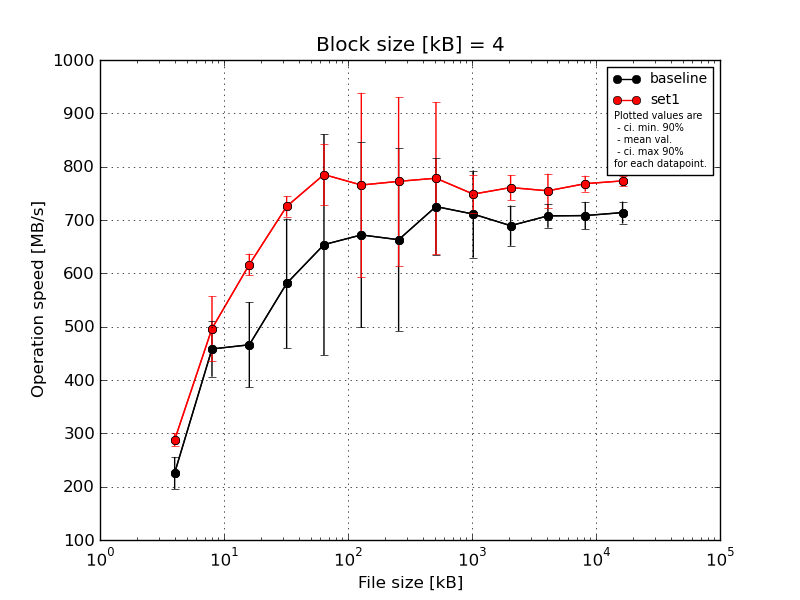
|
Block size [kB] |
File size [kB] |
| 4 |
8 |
16 |
32 |
64 |
128 |
256 |
512 |
1024 |
2048 |
4096 |
8192 |
16384 |
| baseline | 4 | 216.13 | 521.74 | 556.31 | 694.22 | 751.55 | 816.89 | 873.95 | 894.38 | 793.65 | 742.96 | 745.43 | 751.94 | 748.96 |
| 4 | 178.46 | 373.19 | 423.34 | 452.28 | 265.92 | 806.84 | 540.0 | 676.76 | 575.37 | 658.56 | 690.11 | 705.59 | 706.37 |
| 4 | 245.25 | 483.26 | 556.31 | 676.31 | 762.48 | 425.28 | 838.99 | 685.83 | 763.46 | 720.5 | 713.9 | 711.04 | 719.58 |
| 4 | 228.17 | 456.34 | 381.45 | 432.86 | 726.55 | 529.69 | 490.03 | 681.38 | 684.92 | 664.93 | 699.55 | 690.25 | 695.02 |
| 4 | 260.87 | 456.34 | 412.68 | 649.5 | 762.48 | 781.58 | 572.11 | 687.63 | 737.94 | 659.85 | 689.77 | 682.64 | 699.79 |
| mean val. |
225.78 |
458.17 |
466.02 |
581.03 |
653.79 |
672.06 |
663.02 |
725.2 |
711.07 |
689.36 |
707.75 |
708.29 |
713.94 |
| standard dev. |
31.42 |
54.54 |
83.85 |
127.58 |
217.33 |
181.87 |
179.43 |
94.67 |
85.71 |
39.56 |
23.23 |
26.94 |
21.64 |
| ci. min. 90% |
195.82 |
406.17 |
386.08 |
459.39 |
446.6 |
498.66 |
491.95 |
634.94 |
629.35 |
651.65 |
685.6 |
682.61 |
693.31 |
| ci. max 90% |
255.73 |
510.17 |
545.96 |
702.67 |
860.99 |
845.45 |
834.09 |
815.46 |
792.78 |
727.07 |
729.9 |
733.98 |
734.58 |
| geom. mean |
223.93 |
455.44 |
460.12 |
569.11 |
609.94 |
650.02 |
644.27 |
720.75 |
706.65 |
688.47 |
707.45 |
707.89 |
713.69 |
| median |
228.17 |
456.34 |
423.34 |
649.5 |
751.55 |
781.58 |
572.11 |
685.83 |
737.94 |
664.93 |
699.55 |
705.59 |
706.37 |
| first quartile |
216.13 |
456.34 |
412.68 |
452.28 |
726.55 |
529.69 |
540.0 |
681.38 |
684.92 |
659.85 |
690.11 |
690.25 |
699.79 |
| third quartile |
245.25 |
483.26 |
556.31 |
676.31 |
762.48 |
806.84 |
838.99 |
687.63 |
763.46 |
720.5 |
713.9 |
711.04 |
719.58 |
| minimum |
178.46 |
373.19 |
381.45 |
432.86 |
265.92 |
425.28 |
490.03 |
676.76 |
575.37 |
658.56 |
689.77 |
682.64 |
695.02 |
| maximum |
260.87 |
521.74 |
556.31 |
694.22 |
762.48 |
816.89 |
873.95 |
894.38 |
793.65 |
742.96 |
745.43 |
751.94 |
748.96 |
| set1 | 4 | 304.5 | 557.22 | 650.12 | 758.49 | 679.47 | 868.31 | 905.66 | 907.54 | 713.83 | 768.91 | 782.78 | 788.94 | 782.93 |
| 4 | 298.95 | 521.74 | 602.32 | 724.93 | 822.27 | 868.31 | 573.37 | 681.16 | 700.71 | 798.09 | 760.46 | 774.07 | 765.52 |
| 4 | 278.61 | 490.5 | 602.32 | 709.24 | 790.05 | 844.53 | 896.37 | 564.39 | 780.65 | 759.03 | 788.97 | 770.2 | 786.55 |
| 4 | 278.61 | 391.0 | 602.32 | 709.24 | 822.27 | 444.76 | 876.88 | 894.38 | 773.46 | 738.84 | 730.59 | 747.03 | 766.39 |
| 4 | 278.61 | 521.74 | 625.31 | 724.93 | 812.08 | 801.9 | 610.06 | 844.33 | 774.03 | 739.36 | 710.84 | 760.37 | 765.15 |
| mean val. |
287.86 |
496.44 |
616.48 |
725.37 |
785.23 |
765.56 |
772.47 |
778.36 |
748.53 |
760.84 |
754.73 |
768.13 |
773.31 |
| standard dev. |
12.81 |
63.5 |
21.28 |
20.11 |
60.57 |
181.37 |
165.84 |
149.78 |
38.06 |
24.5 |
33.54 |
15.64 |
10.52 |
| ci. min. 90% |
275.64 |
435.9 |
596.19 |
706.2 |
727.49 |
592.64 |
614.36 |
635.56 |
712.25 |
737.48 |
722.75 |
753.22 |
763.27 |
| ci. max 90% |
300.07 |
556.98 |
636.77 |
744.54 |
842.97 |
938.48 |
930.57 |
921.16 |
784.82 |
784.21 |
786.71 |
783.03 |
783.34 |
| geom. mean |
287.63 |
492.89 |
616.19 |
725.15 |
783.23 |
743.43 |
757.25 |
765.85 |
747.75 |
760.53 |
754.13 |
768.0 |
773.25 |
| median |
278.61 |
521.74 |
602.32 |
724.93 |
812.08 |
844.53 |
876.88 |
844.33 |
773.46 |
759.03 |
760.46 |
770.2 |
766.39 |
| first quartile |
278.61 |
490.5 |
602.32 |
709.24 |
790.05 |
801.9 |
610.06 |
681.16 |
713.83 |
739.36 |
730.59 |
760.37 |
765.52 |
| third quartile |
298.95 |
521.74 |
625.31 |
724.93 |
822.27 |
868.31 |
896.37 |
894.38 |
774.03 |
768.91 |
782.78 |
774.07 |
782.93 |
| minimum |
278.61 |
391.0 |
602.32 |
709.24 |
679.47 |
444.76 |
573.37 |
564.39 |
700.71 |
738.84 |
710.84 |
747.03 |
765.15 |
| maximum |
304.5 |
557.22 |
650.12 |
758.49 |
822.27 |
868.31 |
905.66 |
907.54 |
780.65 |
798.09 |
788.97 |
788.94 |
786.55 |
| baseline set1 difference |
27.5 % |
8.35 % |
32.29 % |
24.84 % |
20.1 % |
13.91 % |
16.51 % |
7.33 % |
5.27 % |
10.37 % |
6.64 % |
8.45 % |
8.31 % |
| ttest p-value |
0.0035 |
0.3366 |
0.0046 |
0.037 |
0.2289 |
0.4392 |
0.3458 |
0.5212 |
0.3978 |
0.0089 |
0.0329 |
0.0026 |
0.0006 |
| ttest equality |
DIFF |
SAME |
DIFF |
DIFF |
SAME |
SAME |
SAME |
SAME |
SAME |
DIFF |
DIFF |
DIFF |
DIFF |
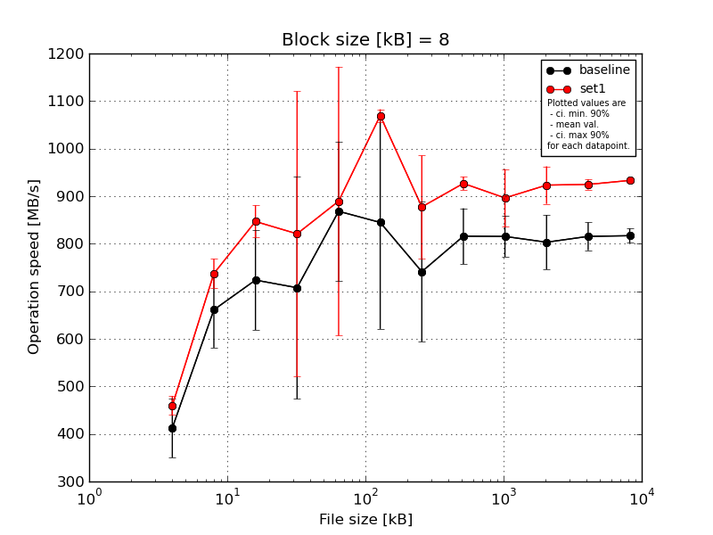
|
Block size [kB] |
File size [kB] |
| 8 |
16 |
32 |
64 |
128 |
256 |
512 |
1024 |
2048 |
4096 |
8192 |
16384 |
| baseline | 8 | 456.34 | 746.38 | 762.91 | 892.24 | 955.33 | 992.21 | 810.4 | 874.94 | 838.21 | 880.29 | 868.14 | 840.78 |
| 8 | 410.6 | 676.98 | 528.93 | 302.08 | 938.23 | 431.01 | 668.35 | 745.15 | 794.54 | 742.92 | 791.38 | 824.15 |
| 8 | 438.04 | 676.98 | 800.17 | 822.27 | 946.7 | 972.88 | 980.52 | 858.29 | 853.99 | 849.1 | 803.86 | 812.63 |
| 8 | 301.16 | 520.93 | 762.91 | 652.41 | 905.81 | 883.53 | 623.45 | 753.58 | 745.73 | 789.56 | 798.16 | 802.48 |
| 8 | 456.34 | 684.05 | 762.91 | 868.58 | 595.24 | 943.98 | 623.45 | 847.37 | 844.2 | 754.0 | 815.66 | 804.35 |
| mean val. |
412.5 |
661.06 |
723.56 |
707.52 |
868.26 |
844.72 |
741.23 |
815.87 |
815.33 |
803.17 |
815.44 |
816.88 |
| standard dev. |
64.99 |
83.59 |
109.99 |
245.28 |
153.77 |
234.89 |
154.19 |
61.57 |
45.08 |
59.77 |
30.78 |
15.86 |
| ci. min. 90% |
350.53 |
581.37 |
618.7 |
473.67 |
721.66 |
620.78 |
594.22 |
757.17 |
772.36 |
746.19 |
786.1 |
801.75 |
| ci. max 90% |
474.46 |
740.76 |
828.43 |
941.36 |
1014.86 |
1068.66 |
888.24 |
874.56 |
858.31 |
860.16 |
844.78 |
832.0 |
| geom. mean |
407.81 |
656.44 |
715.81 |
660.37 |
855.22 |
809.22 |
729.38 |
813.98 |
814.31 |
801.41 |
814.99 |
816.76 |
| median |
438.04 |
676.98 |
762.91 |
822.27 |
938.23 |
943.98 |
668.35 |
847.37 |
838.21 |
789.56 |
803.86 |
812.63 |
| first quartile |
410.6 |
676.98 |
762.91 |
652.41 |
905.81 |
883.53 |
623.45 |
753.58 |
794.54 |
754.0 |
798.16 |
804.35 |
| third quartile |
456.34 |
684.05 |
762.91 |
868.58 |
946.7 |
972.88 |
810.4 |
858.29 |
844.2 |
849.1 |
815.66 |
824.15 |
| minimum |
301.16 |
520.93 |
528.93 |
302.08 |
595.24 |
431.01 |
623.45 |
745.15 |
745.73 |
742.92 |
791.38 |
802.48 |
| maximum |
456.34 |
746.38 |
800.17 |
892.24 |
955.33 |
992.21 |
980.52 |
874.94 |
853.99 |
880.29 |
868.14 |
840.78 |
| set1 | 8 | 456.34 | 782.0 | 892.83 | 975.22 | 1051.09 | 1086.83 | 810.4 | 930.25 | 961.03 | 977.08 | 943.53 | 932.83 |
| 8 | 462.79 | 746.38 | 820.2 | 975.22 | 1026.39 | 1059.38 | 791.14 | 929.42 | 853.3 | 948.36 | 917.32 | 932.51 |
| 8 | 456.34 | 706.16 | 805.08 | 933.54 | 360.38 | 1059.38 | 783.75 | 947.91 | 926.32 | 913.65 | 925.41 | 938.63 |
| 8 | 490.5 | 706.16 | 846.69 | 960.92 | 1000.92 | 1059.38 | 995.89 | 909.08 | 807.47 | 867.86 | 922.31 | 925.08 |
| 8 | 432.26 | 746.38 | 869.14 | 259.34 | 1008.62 | 1082.34 | 1005.92 | 917.43 | 933.23 | 909.29 | 914.72 | 936.5 |
| mean val. |
459.65 |
737.42 |
846.79 |
820.85 |
889.48 |
1069.46 |
877.42 |
926.82 |
896.27 |
923.25 |
924.66 |
933.11 |
| standard dev. |
20.82 |
32.02 |
35.59 |
314.35 |
296.4 |
13.9 |
113.2 |
14.72 |
63.63 |
41.48 |
11.34 |
5.17 |
| ci. min. 90% |
439.8 |
706.89 |
812.86 |
521.15 |
606.89 |
1056.21 |
769.49 |
912.79 |
835.6 |
883.7 |
913.84 |
928.18 |
| ci. max 90% |
479.49 |
767.94 |
880.72 |
1120.55 |
1172.07 |
1082.71 |
985.34 |
940.85 |
956.93 |
962.8 |
935.47 |
938.04 |
| geom. mean |
459.27 |
736.86 |
846.19 |
739.57 |
829.41 |
1069.39 |
871.73 |
926.72 |
894.42 |
922.5 |
924.6 |
933.1 |
| median |
456.34 |
746.38 |
846.69 |
960.92 |
1008.62 |
1059.38 |
810.4 |
929.42 |
926.32 |
913.65 |
922.31 |
932.83 |
| first quartile |
456.34 |
706.16 |
820.2 |
933.54 |
1000.92 |
1059.38 |
791.14 |
917.43 |
853.3 |
909.29 |
917.32 |
932.51 |
| third quartile |
462.79 |
746.38 |
869.14 |
975.22 |
1026.39 |
1082.34 |
995.89 |
930.25 |
933.23 |
948.36 |
925.41 |
936.5 |
| minimum |
432.26 |
706.16 |
805.08 |
259.34 |
360.38 |
1059.38 |
783.75 |
909.08 |
807.47 |
867.86 |
914.72 |
925.08 |
| maximum |
490.5 |
782.0 |
892.83 |
975.22 |
1051.09 |
1086.83 |
1005.92 |
947.91 |
961.03 |
977.08 |
943.53 |
938.63 |
| baseline set1 difference |
11.43 % |
11.55 % |
17.03 % |
16.02 % |
2.44 % |
26.6 % |
18.37 % |
13.6 % |
9.93 % |
14.95 % |
13.39 % |
14.23 % |
| ttest p-value |
0.161 |
0.0929 |
0.0443 |
0.5428 |
0.8905 |
0.0652 |
0.1501 |
0.0044 |
0.0489 |
0.0061 |
0.0001 |
0.0 |
| ttest equality |
SAME |
DIFF |
DIFF |
SAME |
SAME |
DIFF |
SAME |
DIFF |
DIFF |
DIFF |
DIFF |
DIFF |

|
Block size [kB] |
File size [kB] |
| 16 |
32 |
64 |
128 |
256 |
512 |
1024 |
2048 |
4096 |
8192 |
16384 |
| baseline | 16 | 684.05 | 917.83 | 960.92 | 1040.65 | 647.35 | 822.47 | 940.89 | 867.68 | 923.36 | 914.07 | 908.93 |
| 16 | 625.31 | 924.31 | 701.28 | 687.31 | 588.16 | 742.93 | 786.21 | 791.47 | 805.48 | 863.07 | 876.23 |
| 16 | 713.86 | 979.57 | 960.92 | 999.01 | 1041.49 | 801.42 | 906.52 | 898.06 | 859.8 | 860.04 | 878.45 |
| 16 | 625.31 | 869.14 | 917.21 | 991.46 | 596.53 | 662.44 | 684.47 | 884.61 | 806.45 | 874.89 | 867.21 |
| 16 | 501.02 | 972.3 | 917.21 | 1000.92 | 1003.61 | 891.34 | 900.88 | 834.37 | 764.97 | 821.85 | 862.91 |
| mean val. |
629.91 |
932.63 |
891.51 |
943.87 |
775.43 |
784.12 |
843.79 |
855.24 |
832.01 |
866.79 |
878.74 |
| standard dev. |
81.6 |
44.99 |
108.56 |
144.7 |
227.12 |
86.27 |
106.44 |
42.88 |
61.17 |
33.09 |
18.04 |
| ci. min. 90% |
552.11 |
889.74 |
788.01 |
805.92 |
558.89 |
701.87 |
742.31 |
814.36 |
773.69 |
835.24 |
861.55 |
| ci. max 90% |
707.7 |
975.52 |
995.01 |
1081.82 |
991.96 |
866.37 |
945.28 |
896.12 |
890.33 |
898.33 |
895.94 |
| geom. mean |
625.39 |
931.76 |
885.61 |
933.56 |
750.06 |
780.23 |
838.1 |
854.36 |
830.25 |
866.28 |
878.6 |
| median |
625.31 |
924.31 |
917.21 |
999.01 |
647.35 |
801.42 |
900.88 |
867.68 |
806.45 |
863.07 |
876.23 |
| first quartile |
625.31 |
917.83 |
917.21 |
991.46 |
596.53 |
742.93 |
786.21 |
834.37 |
805.48 |
860.04 |
867.21 |
| third quartile |
684.05 |
972.3 |
960.92 |
1000.92 |
1003.61 |
822.47 |
906.52 |
884.61 |
859.8 |
874.89 |
878.45 |
| minimum |
501.02 |
869.14 |
701.28 |
687.31 |
588.16 |
662.44 |
684.47 |
791.47 |
764.97 |
821.85 |
862.91 |
| maximum |
713.86 |
979.57 |
960.92 |
1040.65 |
1041.49 |
891.34 |
940.89 |
898.06 |
923.36 |
914.07 |
908.93 |
| set1 | 16 | 746.38 | 1002.04 | 1075.22 | 1115.97 | 661.23 | 851.53 | 974.78 | 1021.41 | 1011.11 | 1014.96 | 1012.14 |
| 16 | 676.98 | 979.57 | 1041.06 | 1077.0 | 520.69 | 838.93 | 952.43 | 999.5 | 1006.02 | 1000.61 | 998.62 |
| 16 | 713.86 | 979.57 | 1041.06 | 1106.55 | 1131.39 | 1066.27 | 981.4 | 977.6 | 985.75 | 1006.56 | 1015.94 |
| 16 | 746.38 | 979.57 | 1041.06 | 1106.55 | 1152.53 | 1059.27 | 956.99 | 989.59 | 933.27 | 992.68 | 1014.13 |
| 16 | 713.86 | 972.3 | 1079.64 | 1106.55 | 1157.62 | 825.06 | 930.25 | 900.95 | 1048.79 | 997.88 | 1003.08 |
| mean val. |
719.49 |
982.61 |
1055.61 |
1102.52 |
924.69 |
928.21 |
959.17 |
977.81 |
996.99 |
1002.54 |
1008.78 |
| standard dev. |
28.79 |
11.31 |
19.98 |
14.84 |
308.83 |
123.22 |
20.15 |
45.87 |
42.28 |
8.56 |
7.53 |
| ci. min. 90% |
692.04 |
971.83 |
1036.55 |
1088.37 |
630.25 |
810.74 |
939.96 |
934.08 |
956.68 |
994.38 |
1001.6 |
| ci. max 90% |
746.94 |
993.39 |
1074.66 |
1116.67 |
1219.13 |
1045.69 |
978.38 |
1021.54 |
1037.3 |
1010.7 |
1015.96 |
| geom. mean |
719.02 |
982.56 |
1055.46 |
1102.44 |
877.31 |
921.84 |
959.0 |
976.92 |
996.26 |
1002.51 |
1008.76 |
| median |
713.86 |
979.57 |
1041.06 |
1106.55 |
1131.39 |
851.53 |
956.99 |
989.59 |
1006.02 |
1000.61 |
1012.14 |
| first quartile |
713.86 |
979.57 |
1041.06 |
1106.55 |
661.23 |
838.93 |
952.43 |
977.6 |
985.75 |
997.88 |
1003.08 |
| third quartile |
746.38 |
979.57 |
1075.22 |
1106.55 |
1152.53 |
1059.27 |
974.78 |
999.5 |
1011.11 |
1006.56 |
1014.13 |
| minimum |
676.98 |
972.3 |
1041.06 |
1077.0 |
520.69 |
825.06 |
930.25 |
900.95 |
933.27 |
992.68 |
998.62 |
| maximum |
746.38 |
1002.04 |
1079.64 |
1115.97 |
1157.62 |
1066.27 |
981.4 |
1021.41 |
1048.79 |
1014.96 |
1015.94 |
| baseline set1 difference |
14.22 % |
5.36 % |
18.41 % |
16.81 % |
19.25 % |
18.38 % |
13.67 % |
14.33 % |
19.83 % |
15.66 % |
14.8 % |
| ttest p-value |
0.0493 |
0.0426 |
0.0105 |
0.0406 |
0.4093 |
0.0646 |
0.0444 |
0.0024 |
0.0011 |
0.0 |
0.0 |
| ttest equality |
DIFF |
DIFF |
DIFF |
DIFF |
SAME |
DIFF |
DIFF |
DIFF |
DIFF |
DIFF |
DIFF |
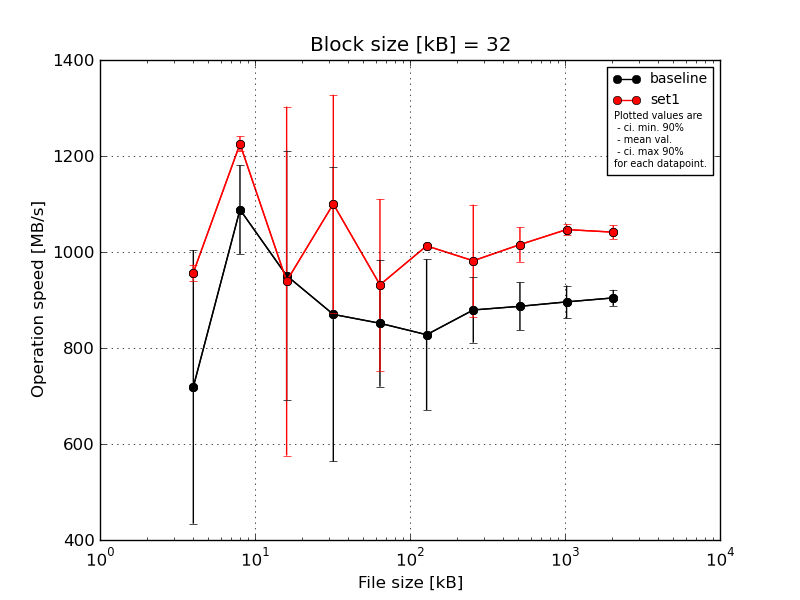
|
Block size [kB] |
File size [kB] |
| 32 |
64 |
128 |
256 |
512 |
1024 |
2048 |
4096 |
8192 |
16384 |
| baseline | 32 | 892.83 | 1155.81 | 1147.73 | 698.67 | 805.11 | 979.56 | 965.78 | 945.84 | 953.42 | 920.97 |
| 32 | 187.03 | 1116.43 | 499.89 | 1076.78 | 840.27 | 654.87 | 933.64 | 896.66 | 892.96 | 910.5 |
| 32 | 820.2 | 1135.78 | 1115.97 | 1091.35 | 1080.0 | 926.75 | 877.95 | 920.37 | 893.36 | 919.11 |
| 32 | 825.36 | 917.21 | 885.91 | 1101.67 | 828.0 | 642.63 | 798.09 | 858.0 | 885.74 | 887.56 |
| 32 | 869.14 | 1116.43 | 1104.22 | 381.74 | 704.26 | 934.6 | 820.74 | 813.33 | 854.89 | 883.73 |
| mean val. |
718.91 |
1088.33 |
950.74 |
870.04 |
851.53 |
827.68 |
879.24 |
886.84 |
896.07 |
904.37 |
| standard dev. |
298.87 |
97.04 |
272.55 |
321.39 |
138.49 |
164.64 |
71.52 |
52.29 |
35.74 |
17.6 |
| ci. min. 90% |
433.97 |
995.82 |
690.9 |
563.63 |
719.49 |
670.72 |
811.06 |
836.99 |
862.0 |
887.59 |
| ci. max 90% |
1003.86 |
1180.85 |
1210.59 |
1176.46 |
983.57 |
984.65 |
947.42 |
936.69 |
930.14 |
921.15 |
| geom. mean |
628.73 |
1084.58 |
910.67 |
808.42 |
843.12 |
813.85 |
876.91 |
885.59 |
895.51 |
904.24 |
| median |
825.36 |
1116.43 |
1104.22 |
1076.78 |
828.0 |
926.75 |
877.95 |
896.66 |
892.96 |
910.5 |
| first quartile |
820.2 |
1116.43 |
885.91 |
698.67 |
805.11 |
654.87 |
820.74 |
858.0 |
885.74 |
887.56 |
| third quartile |
869.14 |
1135.78 |
1115.97 |
1091.35 |
840.27 |
934.6 |
933.64 |
920.37 |
893.36 |
919.11 |
| minimum |
187.03 |
917.21 |
499.89 |
381.74 |
704.26 |
642.63 |
798.09 |
813.33 |
854.89 |
883.73 |
| maximum |
892.83 |
1155.81 |
1147.73 |
1101.67 |
1080.0 |
979.56 |
965.78 |
945.84 |
953.42 |
920.97 |
| set1 | 32 | 944.28 | 1249.46 | 1237.09 | 673.98 | 1128.83 | 1020.56 | 1073.56 | 1058.78 | 1052.36 | 1061.3 |
| 32 | 944.28 | 1220.38 | 503.73 | 1190.47 | 863.8 | 1008.05 | 1021.53 | 987.2 | 1035.86 | 1033.19 |
| 32 | 979.57 | 1203.57 | 1189.38 | 1213.9 | 863.8 | 1011.21 | 766.59 | 966.16 | 1045.35 | 1050.83 |
| 32 | 944.28 | 1226.08 | 541.17 | 1202.76 | 1113.84 | 1013.16 | 1037.83 | 1030.43 | 1064.69 | 1022.96 |
| 32 | 972.3 | 1226.08 | 1225.53 | 1219.55 | 687.86 | 1010.97 | 1009.0 | 1034.62 | 1035.35 | 1038.55 |
| mean val. |
956.94 |
1225.11 |
939.38 |
1100.13 |
931.63 |
1012.79 |
981.7 |
1015.44 |
1046.72 |
1041.37 |
| standard dev. |
17.53 |
16.44 |
381.24 |
238.49 |
187.56 |
4.71 |
122.67 |
37.74 |
12.29 |
15.0 |
| ci. min. 90% |
940.23 |
1209.44 |
575.91 |
872.76 |
752.81 |
1008.3 |
864.75 |
979.46 |
1035.01 |
1027.06 |
| ci. max 90% |
973.65 |
1240.79 |
1302.85 |
1327.51 |
1110.45 |
1017.28 |
1098.66 |
1051.42 |
1058.43 |
1055.67 |
| geom. mean |
956.82 |
1225.03 |
867.59 |
1073.95 |
916.13 |
1012.78 |
974.84 |
1014.87 |
1046.66 |
1041.28 |
| median |
944.28 |
1226.08 |
1189.38 |
1202.76 |
863.8 |
1011.21 |
1021.53 |
1030.43 |
1045.35 |
1038.55 |
| first quartile |
944.28 |
1220.38 |
541.17 |
1190.47 |
863.8 |
1010.97 |
1009.0 |
987.2 |
1035.86 |
1033.19 |
| third quartile |
972.3 |
1226.08 |
1225.53 |
1213.9 |
1113.84 |
1013.16 |
1037.83 |
1034.62 |
1052.36 |
1050.83 |
| minimum |
944.28 |
1203.57 |
503.73 |
673.98 |
687.86 |
1008.05 |
766.59 |
966.16 |
1035.35 |
1022.96 |
| maximum |
979.57 |
1249.46 |
1237.09 |
1219.55 |
1128.83 |
1020.56 |
1073.56 |
1058.78 |
1064.69 |
1061.3 |
| baseline set1 difference |
33.11 % |
12.57 % |
-1.19 % |
26.45 % |
9.41 % |
22.36 % |
11.65 % |
14.5 % |
16.81 % |
15.15 % |
| ttest p-value |
0.1133 |
0.0145 |
0.9581 |
0.2346 |
0.4644 |
0.0362 |
0.1453 |
0.0021 |
0.0 |
0.0 |
| ttest equality |
SAME |
DIFF |
SAME |
SAME |
SAME |
DIFF |
SAME |
DIFF |
DIFF |
DIFF |
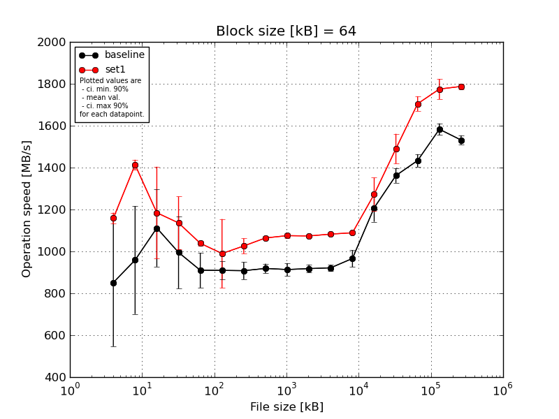
|
Block size [kB] |
File size [kB] |
| 64 |
128 |
256 |
512 |
1024 |
2048 |
4096 |
8192 |
16384 |
32768 |
65536 |
131072 |
262144 |
524288 |
1048576 |
2097152 |
4194304 |
| baseline | 64 | 1024.78 | 556.09 | 1250.08 | 875.71 | 1002.99 | 969.47 | 976.79 | 953.85 | 943.95 | 950.4 | 947.98 | 951.73 | 1254.86 | 1401.46 | 1413.75 | 1591.81 | 1531.26 |
| 64 | 993.7 | 1077.0 | 773.97 | 1152.4 | 820.99 | 944.68 | 880.06 | 925.8 | 935.4 | 924.88 | 915.92 | 940.88 | 1128.08 | 1362.7 | 1425.88 | 1607.43 | 1563.64 |
| 64 | 1009.0 | 1288.79 | 1206.92 | 1154.94 | 961.6 | 878.77 | 918.5 | 912.31 | 929.91 | 905.71 | 922.63 | 985.5 | 1271.84 | 1308.21 | 1488.77 | 1584.32 | 1498.58 |
| 64 | 282.85 | 879.96 | 1131.39 | 744.25 | 812.41 | 880.25 | 867.86 | 912.18 | 880.72 | 903.26 | 908.72 | 923.19 | 1250.21 | 1349.0 | 1428.21 | 1533.49 | 1532.79 |
| 64 | 947.03 | 991.46 | 1195.9 | 1048.15 | 952.21 | 873.74 | 896.66 | 889.26 | 877.67 | 904.93 | 913.03 | 1029.44 | 1136.21 | 1388.9 | 1412.11 | 1598.6 | 1531.4 |
| mean val. |
851.47 |
958.66 |
1111.65 |
995.09 |
910.04 |
909.38 |
907.97 |
918.68 |
913.53 |
917.84 |
921.66 |
966.15 |
1208.24 |
1362.05 |
1433.74 |
1583.13 |
1531.54 |
| standard dev. |
319.2 |
270.33 |
193.49 |
180.48 |
87.37 |
44.48 |
42.91 |
23.64 |
31.76 |
20.22 |
15.56 |
42.05 |
69.99 |
36.55 |
31.58 |
29.03 |
23.01 |
| ci. min. 90% |
547.15 |
700.93 |
927.18 |
823.03 |
826.74 |
866.98 |
867.07 |
896.14 |
883.25 |
898.56 |
906.82 |
926.06 |
1141.51 |
1327.21 |
1403.64 |
1555.45 |
1509.6 |
| ci. max 90% |
1155.79 |
1216.39 |
1296.12 |
1167.16 |
993.34 |
951.79 |
948.88 |
941.22 |
943.81 |
937.12 |
936.49 |
1006.24 |
1274.97 |
1396.9 |
1463.85 |
1610.8 |
1553.47 |
| geom. mean |
772.57 |
923.97 |
1095.79 |
981.15 |
906.62 |
908.52 |
907.18 |
918.44 |
913.08 |
917.66 |
921.55 |
965.43 |
1206.6 |
1361.66 |
1433.47 |
1582.91 |
1531.4 |
| median |
993.7 |
991.46 |
1195.9 |
1048.15 |
952.21 |
880.25 |
896.66 |
912.31 |
929.91 |
905.71 |
915.92 |
951.73 |
1250.21 |
1362.7 |
1425.88 |
1591.81 |
1531.4 |
| first quartile |
947.03 |
879.96 |
1131.39 |
875.71 |
820.99 |
878.77 |
880.06 |
912.18 |
880.72 |
904.93 |
913.03 |
940.88 |
1136.21 |
1349.0 |
1413.75 |
1584.32 |
1531.26 |
| third quartile |
1009.0 |
1077.0 |
1206.92 |
1152.4 |
961.6 |
944.68 |
918.5 |
925.8 |
935.4 |
924.88 |
922.63 |
985.5 |
1254.86 |
1388.9 |
1428.21 |
1598.6 |
1532.79 |
| minimum |
282.85 |
556.09 |
773.97 |
744.25 |
812.41 |
873.74 |
867.86 |
889.26 |
877.67 |
903.26 |
908.72 |
923.19 |
1128.08 |
1308.21 |
1412.11 |
1533.49 |
1498.58 |
| maximum |
1024.78 |
1288.79 |
1250.08 |
1154.94 |
1002.99 |
969.47 |
976.79 |
953.85 |
943.95 |
950.4 |
947.98 |
1029.44 |
1271.84 |
1401.46 |
1488.77 |
1607.43 |
1563.64 |
| set1 | 64 | 1203.57 | 1453.1 | 1231.0 | 1244.0 | 1051.52 | 1085.23 | 1083.11 | 1068.38 | 1073.62 | 1075.77 | 1089.75 | 1098.96 | 1272.71 | 1466.49 | 1731.2 | 1749.96 | 1786.3 |
| 64 | 1160.93 | 1402.57 | 1296.45 | 1184.96 | 1042.89 | 1054.93 | 1026.96 | 1069.95 | 1080.5 | 1071.56 | 1087.9 | 1086.72 | 1373.54 | 1583.46 | 1640.67 | 1722.92 | 1768.41 |
| 64 | 1135.78 | 1402.57 | 1309.4 | 905.97 | 1044.97 | 681.68 | 977.99 | 1057.94 | 1066.95 | 1080.87 | 1079.07 | 1088.03 | 1146.72 | 1553.88 | 1727.98 | 1743.52 | 1803.66 |
| 64 | 1155.81 | 1387.72 | 1309.4 | 1167.8 | 1026.55 | 1066.6 | 1022.76 | 1051.51 | 1090.88 | 1065.18 | 1070.7 | 1081.51 | 1310.88 | 1421.24 | 1710.39 | 1837.44 | 1781.37 |
| 64 | 1135.78 | 1421.58 | 776.83 | 1176.98 | 1027.81 | 1061.07 | 1018.85 | 1073.51 | 1064.26 | 1074.98 | 1085.44 | 1089.7 | 1259.13 | 1425.69 | 1714.33 | 1820.56 | 1798.05 |
| mean val. |
1158.37 |
1413.51 |
1184.62 |
1135.94 |
1038.75 |
989.9 |
1025.93 |
1064.26 |
1075.24 |
1073.67 |
1082.57 |
1088.98 |
1272.6 |
1490.15 |
1704.91 |
1774.88 |
1787.56 |
| standard dev. |
27.73 |
25.19 |
230.26 |
131.97 |
11.04 |
172.67 |
37.51 |
9.18 |
10.77 |
5.8 |
7.77 |
6.37 |
83.19 |
74.55 |
36.98 |
50.76 |
13.93 |
| ci. min. 90% |
1131.93 |
1389.49 |
965.09 |
1010.12 |
1028.23 |
825.28 |
990.17 |
1055.5 |
1064.97 |
1068.14 |
1075.17 |
1082.91 |
1193.28 |
1419.08 |
1669.66 |
1726.49 |
1774.28 |
| ci. max 90% |
1184.81 |
1437.52 |
1404.15 |
1261.76 |
1049.27 |
1154.53 |
1061.7 |
1073.01 |
1085.52 |
1079.2 |
1089.98 |
1095.05 |
1351.91 |
1561.23 |
1740.17 |
1823.27 |
1800.84 |
| geom. mean |
1158.11 |
1413.33 |
1162.78 |
1129.16 |
1038.7 |
975.47 |
1025.39 |
1064.22 |
1075.2 |
1073.66 |
1082.55 |
1088.97 |
1270.38 |
1488.67 |
1704.59 |
1774.3 |
1787.52 |
| median |
1155.81 |
1402.57 |
1296.45 |
1176.98 |
1042.89 |
1061.07 |
1022.76 |
1068.38 |
1073.62 |
1074.98 |
1085.44 |
1088.03 |
1272.71 |
1466.49 |
1714.33 |
1749.96 |
1786.3 |
| first quartile |
1135.78 |
1402.57 |
1231.0 |
1167.8 |
1027.81 |
1054.93 |
1018.85 |
1057.94 |
1066.95 |
1071.56 |
1079.07 |
1086.72 |
1259.13 |
1425.69 |
1710.39 |
1743.52 |
1781.37 |
| third quartile |
1160.93 |
1421.58 |
1309.4 |
1184.96 |
1044.97 |
1066.6 |
1026.96 |
1069.95 |
1080.5 |
1075.77 |
1087.9 |
1089.7 |
1310.88 |
1553.88 |
1727.98 |
1820.56 |
1798.05 |
| minimum |
1135.78 |
1387.72 |
776.83 |
905.97 |
1026.55 |
681.68 |
977.99 |
1051.51 |
1064.26 |
1065.18 |
1070.7 |
1081.51 |
1146.72 |
1421.24 |
1640.67 |
1722.92 |
1768.41 |
| maximum |
1203.57 |
1453.1 |
1309.4 |
1244.0 |
1051.52 |
1085.23 |
1083.11 |
1073.51 |
1090.88 |
1080.87 |
1089.75 |
1098.96 |
1373.54 |
1583.46 |
1731.2 |
1837.44 |
1803.66 |
| baseline set1 difference |
36.04 % |
47.45 % |
6.56 % |
14.15 % |
14.14 % |
8.85 % |
12.99 % |
15.85 % |
17.7 % |
16.98 % |
17.46 % |
12.71 % |
5.33 % |
9.4 % |
18.91 % |
12.11 % |
16.72 % |
| ttest p-value |
0.0646 |
0.0057 |
0.6023 |
0.1966 |
0.0114 |
0.3422 |
0.0017 |
0.0 |
0.0 |
0.0 |
0.0 |
0.0002 |
0.2222 |
0.0087 |
0.0 |
0.0001 |
0.0 |
| ttest equality |
DIFF |
DIFF |
SAME |
SAME |
DIFF |
SAME |
DIFF |
DIFF |
DIFF |
DIFF |
DIFF |
DIFF |
SAME |
DIFF |
DIFF |
DIFF |
DIFF |
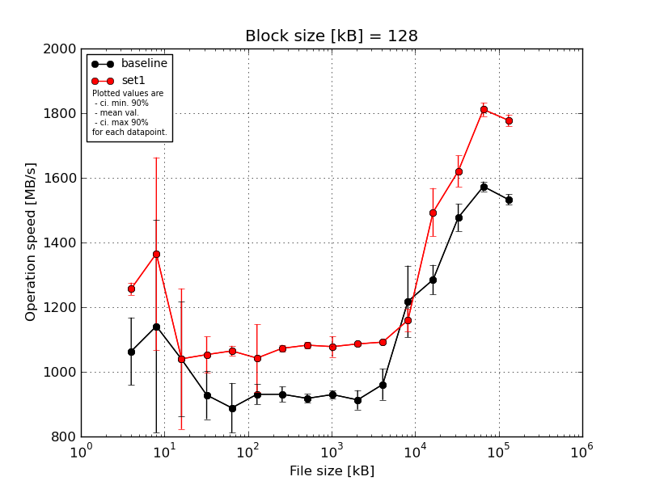
|
Block size [kB] |
File size [kB] |
| 128 |
256 |
512 |
1024 |
2048 |
4096 |
8192 |
16384 |
32768 |
65536 |
131072 |
262144 |
524288 |
1048576 |
2097152 |
4194304 |
| baseline | 128 | 1168.18 | 1460.81 | 954.2 | 1027.81 | 986.68 | 974.69 | 956.13 | 937.49 | 952.16 | 946.79 | 999.01 | 1275.13 | 1339.5 | 1507.63 | 1570.09 | 1549.89 |
| 128 | 1077.0 | 972.88 | 925.97 | 856.89 | 803.6 | 885.35 | 949.1 | 923.15 | 931.75 | 923.52 | 936.71 | 1263.54 | 1240.52 | 1454.21 | 1557.59 | 1533.37 |
| 128 | 1135.3 | 1419.29 | 1244.0 | 997.03 | 952.84 | 929.6 | 934.9 | 898.87 | 923.12 | 862.96 | 929.33 | 1086.52 | 1325.9 | 1427.95 | 1561.18 | 1535.21 |
| 128 | 1051.09 | 1225.25 | 1231.59 | 872.58 | 881.45 | 940.75 | 895.65 | 915.9 | 926.21 | 924.98 | 911.58 | 1356.24 | 1285.22 | 1537.26 | 1582.26 | 1540.5 |
| 128 | 885.91 | 627.96 | 840.27 | 887.34 | 817.7 | 922.7 | 917.95 | 914.29 | 915.7 | 908.07 | 1029.34 | 1107.81 | 1234.27 | 1458.42 | 1595.76 | 1504.41 |
| mean val. |
1063.5 |
1141.24 |
1039.21 |
928.33 |
888.45 |
930.62 |
930.75 |
917.94 |
929.79 |
913.26 |
961.19 |
1217.85 |
1285.08 |
1477.09 |
1573.37 |
1532.68 |
| standard dev. |
109.53 |
345.79 |
186.13 |
78.28 |
80.7 |
32.24 |
24.47 |
14.05 |
13.78 |
31.32 |
50.37 |
116.06 |
47.95 |
44.28 |
15.72 |
17.06 |
| ci. min. 90% |
959.07 |
811.56 |
861.75 |
853.7 |
811.51 |
899.88 |
907.42 |
904.54 |
916.65 |
883.4 |
913.17 |
1107.2 |
1239.37 |
1434.88 |
1558.38 |
1516.41 |
| ci. max 90% |
1167.92 |
1470.91 |
1216.66 |
1002.96 |
965.39 |
961.36 |
954.07 |
931.34 |
942.93 |
943.12 |
1009.22 |
1328.5 |
1330.79 |
1519.31 |
1588.36 |
1548.94 |
| geom. mean |
1058.7 |
1091.88 |
1026.1 |
925.74 |
885.53 |
930.17 |
930.49 |
917.85 |
929.71 |
912.83 |
960.15 |
1213.38 |
1284.37 |
1476.57 |
1573.31 |
1532.6 |
| median |
1077.0 |
1225.25 |
954.2 |
887.34 |
881.45 |
929.6 |
934.9 |
915.9 |
926.21 |
923.52 |
936.71 |
1263.54 |
1285.22 |
1458.42 |
1570.09 |
1535.21 |
| first quartile |
1051.09 |
972.88 |
925.97 |
872.58 |
817.7 |
922.7 |
917.95 |
914.29 |
923.12 |
908.07 |
929.33 |
1107.81 |
1240.52 |
1454.21 |
1561.18 |
1533.37 |
| third quartile |
1135.3 |
1419.29 |
1231.59 |
997.03 |
952.84 |
940.75 |
949.1 |
923.15 |
931.75 |
924.98 |
999.01 |
1275.13 |
1325.9 |
1507.63 |
1582.26 |
1540.5 |
| minimum |
885.91 |
627.96 |
840.27 |
856.89 |
803.6 |
885.35 |
895.65 |
898.87 |
915.7 |
862.96 |
911.58 |
1086.52 |
1234.27 |
1427.95 |
1557.59 |
1504.41 |
| maximum |
1168.18 |
1460.81 |
1244.0 |
1027.81 |
986.68 |
974.69 |
956.13 |
937.49 |
952.16 |
946.79 |
1029.34 |
1356.24 |
1339.5 |
1537.26 |
1595.76 |
1549.89 |
| set1 | 128 | 1248.88 | 1551.59 | 1291.5 | 1123.63 | 1090.59 | 1089.3 | 1078.48 | 1096.95 | 1094.43 | 1087.86 | 1090.65 | 1100.22 | 1414.71 | 1706.34 | 1796.5 | 1779.08 |
| 128 | 1260.9 | 1498.38 | 759.89 | 1068.39 | 1068.91 | 1034.62 | 1070.36 | 1074.85 | 1020.24 | 1092.21 | 1089.38 | 1154.94 | 1555.26 | 1621.7 | 1802.99 | 1750.81 |
| 128 | 1237.09 | 1479.36 | 1259.7 | 1041.6 | 1049.91 | 855.42 | 1062.83 | 1088.35 | 1105.55 | 1089.64 | 1101.19 | 1194.8 | 1512.42 | 1582.04 | 1831.32 | 1781.45 |
| 128 | 1248.88 | 1489.87 | 936.31 | 1069.48 | 1051.49 | 1122.69 | 1089.33 | 1075.48 | 1088.77 | 1084.56 | 1086.37 | 1166.53 | 1577.08 | 1607.34 | 1788.67 | 1774.39 |
| 128 | 1288.79 | 809.21 | 954.2 | 963.36 | 1062.68 | 1110.5 | 1062.83 | 1077.07 | 1080.72 | 1077.46 | 1092.51 | 1181.93 | 1409.16 | 1585.54 | 1838.23 | 1803.29 |
| mean val. |
1256.91 |
1365.68 |
1040.32 |
1053.29 |
1064.72 |
1042.51 |
1072.76 |
1082.54 |
1077.94 |
1086.34 |
1092.02 |
1159.68 |
1493.72 |
1620.59 |
1811.54 |
1777.8 |
| standard dev. |
19.71 |
312.32 |
228.09 |
58.44 |
16.47 |
109.89 |
11.29 |
9.75 |
33.5 |
5.69 |
5.59 |
36.52 |
78.23 |
50.61 |
21.95 |
18.74 |
| ci. min. 90% |
1238.12 |
1067.92 |
822.86 |
997.58 |
1049.01 |
937.74 |
1062.0 |
1073.24 |
1046.01 |
1080.92 |
1086.69 |
1124.87 |
1419.14 |
1572.34 |
1790.62 |
1759.94 |
| ci. max 90% |
1275.7 |
1663.45 |
1257.78 |
1109.01 |
1080.42 |
1147.28 |
1083.53 |
1091.84 |
1109.88 |
1091.77 |
1097.35 |
1194.5 |
1568.31 |
1668.84 |
1832.46 |
1795.67 |
| geom. mean |
1256.79 |
1329.03 |
1020.08 |
1051.97 |
1064.62 |
1037.47 |
1072.72 |
1082.51 |
1077.52 |
1086.33 |
1092.01 |
1159.22 |
1492.08 |
1619.97 |
1811.43 |
1777.72 |
| median |
1248.88 |
1489.87 |
954.2 |
1068.39 |
1062.68 |
1089.3 |
1070.36 |
1077.07 |
1088.77 |
1087.86 |
1090.65 |
1166.53 |
1512.42 |
1607.34 |
1802.99 |
1779.08 |
| first quartile |
1248.88 |
1479.36 |
936.31 |
1041.6 |
1051.49 |
1034.62 |
1062.83 |
1075.48 |
1080.72 |
1084.56 |
1089.38 |
1154.94 |
1414.71 |
1585.54 |
1796.5 |
1774.39 |
| third quartile |
1260.9 |
1498.38 |
1259.7 |
1069.48 |
1068.91 |
1110.5 |
1078.48 |
1088.35 |
1094.43 |
1089.64 |
1092.51 |
1181.93 |
1555.26 |
1621.7 |
1831.32 |
1781.45 |
| minimum |
1237.09 |
809.21 |
759.89 |
963.36 |
1049.91 |
855.42 |
1062.83 |
1074.85 |
1020.24 |
1077.46 |
1086.37 |
1100.22 |
1409.16 |
1582.04 |
1788.67 |
1750.81 |
| maximum |
1288.79 |
1551.59 |
1291.5 |
1123.63 |
1090.59 |
1122.69 |
1089.33 |
1096.95 |
1105.55 |
1092.21 |
1101.19 |
1194.8 |
1577.08 |
1706.34 |
1838.23 |
1803.29 |
| baseline set1 difference |
18.19 % |
19.67 % |
0.11 % |
13.46 % |
19.84 % |
12.02 % |
15.26 % |
17.93 % |
15.93 % |
18.95 % |
13.61 % |
-4.78 % |
16.24 % |
9.71 % |
15.14 % |
15.99 % |
| ttest p-value |
0.0046 |
0.3129 |
0.9935 |
0.0211 |
0.0014 |
0.0604 |
0.0 |
0.0 |
0.0 |
0.0 |
0.0004 |
0.3163 |
0.0009 |
0.0014 |
0.0 |
0.0 |
| ttest equality |
DIFF |
SAME |
SAME |
DIFF |
DIFF |
DIFF |
DIFF |
DIFF |
DIFF |
DIFF |
DIFF |
SAME |
DIFF |
DIFF |
DIFF |
DIFF |
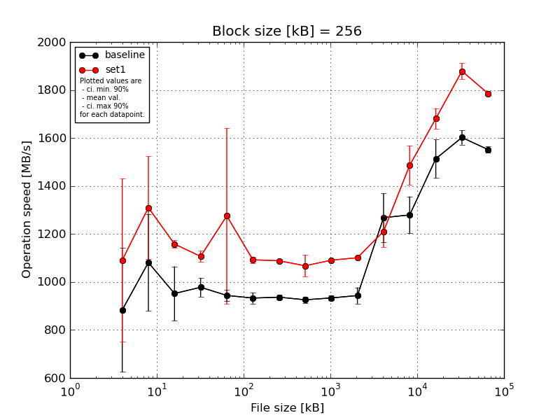
|
Block size [kB] |
File size [kB] |
| 256 |
512 |
1024 |
2048 |
4096 |
8192 |
16384 |
32768 |
65536 |
131072 |
262144 |
524288 |
1048576 |
2097152 |
4194304 |
| baseline | 256 | 1201.38 | 1072.82 | 1076.34 | 1027.79 | 961.29 | 973.47 | 955.91 | 944.84 | 948.82 | 945.35 | 1320.98 | 1410.13 | 1602.47 | 1644.89 | 1547.91 |
| 256 | 654.62 | 1035.22 | 936.27 | 1005.97 | 924.42 | 915.94 | 935.89 | 927.67 | 937.89 | 930.11 | 1380.17 | 1300.32 | 1495.25 | 1576.2 | 1534.57 |
| 256 | 728.78 | 1437.58 | 1071.94 | 980.8 | 966.16 | 922.49 | 933.21 | 919.38 | 932.78 | 915.93 | 1307.37 | 1239.42 | 1489.17 | 1626.05 | 1565.93 |
| 256 | 1156.34 | 970.99 | 831.9 | 925.51 | 910.92 | 935.45 | 930.62 | 930.96 | 926.6 | 922.4 | 1104.71 | 1240.58 | 1586.07 | 1577.71 | 1546.8 |
| 256 | 677.46 | 889.45 | 843.11 | 950.57 | 957.4 | 917.97 | 927.8 | 906.8 | 921.76 | 1004.35 | 1227.34 | 1207.23 | 1395.3 | 1586.13 | 1563.31 |
| mean val. |
883.72 |
1081.21 |
951.91 |
978.13 |
944.04 |
933.06 |
936.69 |
925.93 |
933.57 |
943.63 |
1268.11 |
1279.53 |
1513.65 |
1602.2 |
1551.7 |
| standard dev. |
271.23 |
211.01 |
118.72 |
41.16 |
24.73 |
23.83 |
11.16 |
14.1 |
10.49 |
35.67 |
106.36 |
80.38 |
83.78 |
31.33 |
12.93 |
| ci. min. 90% |
625.13 |
880.03 |
838.73 |
938.88 |
920.46 |
910.35 |
926.05 |
912.49 |
923.57 |
909.61 |
1166.71 |
1202.9 |
1433.77 |
1572.33 |
1539.37 |
| ci. max 90% |
1142.31 |
1282.39 |
1065.1 |
1017.37 |
967.62 |
955.78 |
947.33 |
939.37 |
943.57 |
977.64 |
1369.52 |
1356.16 |
1593.53 |
1632.06 |
1564.03 |
| geom. mean |
852.02 |
1066.36 |
946.01 |
977.43 |
943.78 |
932.83 |
936.64 |
925.85 |
933.52 |
943.1 |
1264.41 |
1277.58 |
1511.78 |
1601.95 |
1551.66 |
| median |
728.78 |
1035.22 |
936.27 |
980.8 |
957.4 |
922.49 |
933.21 |
927.67 |
932.78 |
930.11 |
1307.37 |
1240.58 |
1495.25 |
1586.13 |
1547.91 |
| first quartile |
677.46 |
970.99 |
843.11 |
950.57 |
924.42 |
917.97 |
930.62 |
919.38 |
926.6 |
922.4 |
1227.34 |
1239.42 |
1489.17 |
1577.71 |
1546.8 |
| third quartile |
1156.34 |
1072.82 |
1071.94 |
1005.97 |
961.29 |
935.45 |
935.89 |
930.96 |
937.89 |
945.35 |
1320.98 |
1300.32 |
1586.07 |
1626.05 |
1563.31 |
| minimum |
654.62 |
889.45 |
831.9 |
925.51 |
910.92 |
915.94 |
927.8 |
906.8 |
921.76 |
915.93 |
1104.71 |
1207.23 |
1395.3 |
1576.2 |
1534.57 |
| maximum |
1201.38 |
1437.58 |
1076.34 |
1027.79 |
966.16 |
973.47 |
955.91 |
944.84 |
948.82 |
1004.35 |
1380.17 |
1410.13 |
1602.47 |
1644.89 |
1565.93 |
| set1 | 256 | 1365.68 | 1445.51 | 1184.9 | 1148.21 | 1107.13 | 1089.75 | 1087.77 | 1091.85 | 1094.91 | 1107.68 | 1329.36 | 1500.5 | 1709.55 | 1870.49 | 1792.87 |
| 256 | 694.51 | 1039.32 | 1142.92 | 1104.96 | 1093.21 | 1070.22 | 1078.75 | 984.49 | 1086.26 | 1090.72 | 1199.51 | 1543.86 | 1675.53 | 1822.03 | 1767.62 |
| 256 | 708.11 | 1099.25 | 1152.34 | 1099.6 | 1962.75 | 1104.97 | 1098.15 | 1093.79 | 1091.85 | 1105.49 | 1200.17 | 1572.73 | 1640.11 | 1890.14 | 1785.14 |
| 256 | 1329.32 | 1538.85 | 1158.71 | 1096.43 | 1129.64 | 1102.68 | 1086.07 | 1073.43 | 1085.44 | 1101.64 | 1150.58 | 1461.04 | 1742.72 | 1899.63 | 1785.22 |
| 256 | 1358.6 | 1427.79 | 1150.76 | 1085.79 | 1084.86 | 1094.84 | 1091.7 | 1094.66 | 1095.93 | 1100.51 | 1175.3 | 1353.91 | 1636.5 | 1912.01 | 1796.43 |
| mean val. |
1091.24 |
1310.14 |
1157.93 |
1107.0 |
1275.52 |
1092.49 |
1088.49 |
1067.64 |
1090.88 |
1101.21 |
1210.98 |
1486.41 |
1680.88 |
1878.86 |
1785.46 |
| standard dev. |
356.25 |
224.88 |
16.09 |
24.08 |
384.55 |
13.86 |
7.16 |
47.29 |
4.84 |
6.53 |
69.25 |
85.37 |
45.57 |
35.2 |
11.11 |
| ci. min. 90% |
751.6 |
1095.74 |
1142.59 |
1084.04 |
908.89 |
1079.28 |
1081.66 |
1022.55 |
1086.27 |
1094.98 |
1144.96 |
1405.02 |
1637.43 |
1845.3 |
1774.87 |
| ci. max 90% |
1430.89 |
1524.55 |
1173.27 |
1129.95 |
1642.14 |
1105.71 |
1095.31 |
1112.73 |
1095.49 |
1107.44 |
1277.01 |
1567.79 |
1724.33 |
1912.42 |
1796.05 |
| geom. mean |
1039.37 |
1294.03 |
1157.84 |
1106.79 |
1238.27 |
1092.42 |
1088.47 |
1066.77 |
1090.87 |
1101.19 |
1209.46 |
1484.4 |
1680.39 |
1878.59 |
1785.43 |
| median |
1329.32 |
1427.79 |
1152.34 |
1099.6 |
1107.13 |
1094.84 |
1087.77 |
1091.85 |
1091.85 |
1101.64 |
1199.51 |
1500.5 |
1675.53 |
1890.14 |
1785.22 |
| first quartile |
708.11 |
1099.25 |
1150.76 |
1096.43 |
1093.21 |
1089.75 |
1086.07 |
1073.43 |
1086.26 |
1100.51 |
1175.3 |
1461.04 |
1640.11 |
1870.49 |
1785.14 |
| third quartile |
1358.6 |
1445.51 |
1158.71 |
1104.96 |
1129.64 |
1102.68 |
1091.7 |
1093.79 |
1094.91 |
1105.49 |
1200.17 |
1543.86 |
1709.55 |
1899.63 |
1792.87 |
| minimum |
694.51 |
1039.32 |
1142.92 |
1085.79 |
1084.86 |
1070.22 |
1078.75 |
984.49 |
1085.44 |
1090.72 |
1150.58 |
1353.91 |
1636.5 |
1822.03 |
1767.62 |
| maximum |
1365.68 |
1538.85 |
1184.9 |
1148.21 |
1962.75 |
1104.97 |
1098.15 |
1094.66 |
1095.93 |
1107.68 |
1329.36 |
1572.73 |
1742.72 |
1912.01 |
1796.43 |
| baseline set1 difference |
23.48 % |
21.17 % |
21.64 % |
13.18 % |
35.11 % |
17.09 % |
16.21 % |
15.3 % |
16.85 % |
16.7 % |
-4.51 % |
16.17 % |
11.05 % |
17.27 % |
15.06 % |
| ttest p-value |
0.3303 |
0.1355 |
0.0049 |
0.0003 |
0.0906 |
0.0 |
0.0 |
0.0002 |
0.0 |
0.0 |
0.3436 |
0.0043 |
0.0044 |
0.0 |
0.0 |
| ttest equality |
SAME |
SAME |
DIFF |
DIFF |
DIFF |
DIFF |
DIFF |
DIFF |
DIFF |
DIFF |
SAME |
DIFF |
DIFF |
DIFF |
DIFF |
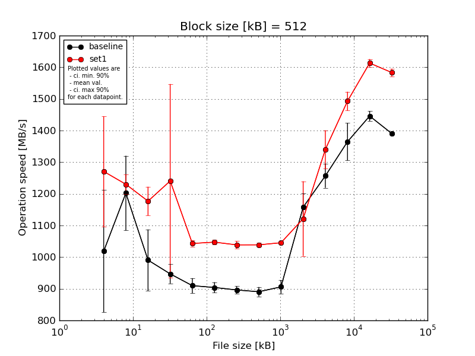
|
Block size [kB] |
File size [kB] |
| 512 |
1024 |
2048 |
4096 |
8192 |
16384 |
32768 |
65536 |
131072 |
262144 |
524288 |
1048576 |
2097152 |
4194304 |
| baseline | 512 | 1237.4 | 1200.5 | 1148.05 | 981.36 | 953.42 | 932.45 | 916.88 | 914.08 | 936.35 | 1122.58 | 1257.32 | 1372.82 | 1455.17 | 1398.41 |
| 512 | 1009.8 | 1049.41 | 967.12 | 965.72 | 901.5 | 897.86 | 899.79 | 897.31 | 921.33 | 1118.04 | 1265.66 | 1320.61 | 1452.37 | 1387.99 |
| 512 | 1196.45 | 1187.58 | 1004.53 | 937.65 | 893.55 | 908.73 | 887.63 | 879.39 | 900.01 | 1226.42 | 1221.57 | 1324.59 | 1418.26 | 1387.89 |
| 512 | 894.38 | 1179.23 | 964.78 | 953.04 | 905.17 | 889.04 | 887.68 | 887.21 | 889.69 | 1180.84 | 1317.59 | 1469.77 | 1460.96 | 1390.71 |
| 512 | 755.51 | 1394.94 | 868.04 | 897.67 | 895.08 | 892.21 | 888.97 | 874.84 | 882.83 | 1141.98 | 1221.04 | 1335.93 | 1442.15 | 1387.14 |
| mean val. |
1018.71 |
1202.33 |
990.51 |
947.09 |
909.74 |
904.06 |
896.19 |
890.57 |
906.04 |
1157.97 |
1256.64 |
1364.74 |
1445.78 |
1390.43 |
| standard dev. |
202.63 |
123.73 |
101.52 |
31.97 |
24.87 |
17.55 |
12.64 |
15.67 |
22.33 |
45.58 |
39.67 |
62.22 |
16.83 |
4.66 |
| ci. min. 90% |
825.53 |
1084.37 |
893.72 |
916.61 |
886.03 |
887.32 |
884.14 |
875.63 |
884.75 |
1114.52 |
1218.82 |
1305.42 |
1429.74 |
1385.98 |
| ci. max 90% |
1211.89 |
1320.29 |
1087.29 |
977.57 |
933.45 |
920.79 |
908.24 |
905.5 |
927.33 |
1201.43 |
1294.46 |
1424.06 |
1461.83 |
1394.87 |
| geom. mean |
1002.03 |
1197.36 |
986.45 |
946.65 |
909.48 |
903.92 |
896.12 |
890.46 |
905.82 |
1157.27 |
1256.14 |
1363.64 |
1445.7 |
1390.42 |
| median |
1009.8 |
1187.58 |
967.12 |
953.04 |
901.5 |
897.86 |
888.97 |
887.21 |
900.01 |
1141.98 |
1257.32 |
1335.93 |
1452.37 |
1387.99 |
| first quartile |
894.38 |
1179.23 |
964.78 |
937.65 |
895.08 |
892.21 |
887.68 |
879.39 |
889.69 |
1122.58 |
1221.57 |
1324.59 |
1442.15 |
1387.89 |
| third quartile |
1196.45 |
1200.5 |
1004.53 |
965.72 |
905.17 |
908.73 |
899.79 |
897.31 |
921.33 |
1180.84 |
1265.66 |
1372.82 |
1455.17 |
1390.71 |
| minimum |
755.51 |
1049.41 |
868.04 |
897.67 |
893.55 |
889.04 |
887.63 |
874.84 |
882.83 |
1118.04 |
1221.04 |
1320.61 |
1418.26 |
1387.14 |
| maximum |
1237.4 |
1394.94 |
1148.05 |
981.36 |
953.42 |
932.45 |
916.88 |
914.08 |
936.35 |
1226.42 |
1317.59 |
1469.77 |
1460.96 |
1398.41 |
| set1 | 512 | 1298.7 | 1269.15 | 1169.66 | 1126.76 | 1056.24 | 1034.13 | 1042.68 | 1047.95 | 1046.2 | 1342.79 | 1443.03 | 1455.55 | 1620.24 | 1591.84 |
| 512 | 948.59 | 1215.1 | 1250.01 | 1123.29 | 1046.29 | 1052.01 | 1019.6 | 1033.09 | 1050.33 | 1062.38 | 1272.79 | 1521.48 | 1597.22 | 1572.91 |
| 512 | 1354.92 | 1184.9 | 1135.62 | 1813.2 | 1047.53 | 1046.03 | 1049.04 | 1046.08 | 1047.92 | 1056.69 | 1346.24 | 1528.02 | 1609.57 | 1593.7 |
| 512 | 1381.7 | 1231.52 | 1193.97 | 1064.96 | 1031.34 | 1051.52 | 1032.69 | 1033.61 | 1039.95 | 1075.56 | 1326.36 | 1473.94 | 1631.97 | 1565.81 |
| 512 | 1369.97 | 1250.24 | 1135.01 | 1075.27 | 1034.39 | 1052.69 | 1049.21 | 1033.32 | 1042.93 | 1070.01 | 1312.73 | 1485.78 | 1607.12 | 1591.46 |
| mean val. |
1270.78 |
1230.18 |
1176.86 |
1240.7 |
1043.16 |
1047.28 |
1038.64 |
1038.81 |
1045.47 |
1121.49 |
1340.23 |
1492.95 |
1613.23 |
1583.14 |
| standard dev. |
182.9 |
32.41 |
47.82 |
321.24 |
10.21 |
7.81 |
12.59 |
7.52 |
4.1 |
123.92 |
63.44 |
31.05 |
13.3 |
12.86 |
| ci. min. 90% |
1096.4 |
1199.28 |
1131.26 |
934.43 |
1033.43 |
1039.83 |
1026.64 |
1031.64 |
1041.56 |
1003.34 |
1279.74 |
1463.35 |
1600.55 |
1570.88 |
| ci. max 90% |
1445.15 |
1261.08 |
1222.45 |
1546.96 |
1052.89 |
1054.72 |
1050.65 |
1045.98 |
1049.37 |
1239.63 |
1400.71 |
1522.55 |
1625.9 |
1595.4 |
| geom. mean |
1258.71 |
1229.84 |
1176.09 |
1213.18 |
1043.12 |
1047.25 |
1038.58 |
1038.79 |
1045.46 |
1116.48 |
1339.05 |
1492.69 |
1613.18 |
1583.1 |
| median |
1354.92 |
1231.52 |
1169.66 |
1123.29 |
1046.29 |
1051.52 |
1042.68 |
1033.61 |
1046.2 |
1070.01 |
1326.36 |
1485.78 |
1609.57 |
1591.46 |
| first quartile |
1298.7 |
1215.1 |
1135.62 |
1075.27 |
1034.39 |
1046.03 |
1032.69 |
1033.32 |
1042.93 |
1062.38 |
1312.73 |
1473.94 |
1607.12 |
1572.91 |
| third quartile |
1369.97 |
1250.24 |
1193.97 |
1126.76 |
1047.53 |
1052.01 |
1049.04 |
1046.08 |
1047.92 |
1075.56 |
1346.24 |
1521.48 |
1620.24 |
1591.84 |
| minimum |
948.59 |
1184.9 |
1135.01 |
1064.96 |
1031.34 |
1034.13 |
1019.6 |
1033.09 |
1039.95 |
1056.69 |
1272.79 |
1455.55 |
1597.22 |
1565.81 |
| maximum |
1381.7 |
1269.15 |
1250.01 |
1813.2 |
1056.24 |
1052.69 |
1049.21 |
1047.95 |
1050.33 |
1342.79 |
1443.03 |
1528.02 |
1631.97 |
1593.7 |
| baseline set1 difference |
24.74 % |
2.32 % |
18.81 % |
31.0 % |
14.67 % |
15.84 % |
15.9 % |
16.65 % |
15.39 % |
-3.15 % |
6.65 % |
9.39 % |
11.58 % |
13.86 % |
| ttest p-value |
0.0728 |
0.6394 |
0.0059 |
0.0764 |
0.0 |
0.0 |
0.0 |
0.0 |
0.0 |
0.5538 |
0.0371 |
0.0033 |
0.0 |
0.0 |
| ttest equality |
DIFF |
SAME |
DIFF |
DIFF |
DIFF |
DIFF |
DIFF |
DIFF |
DIFF |
SAME |
DIFF |
DIFF |
DIFF |
DIFF |
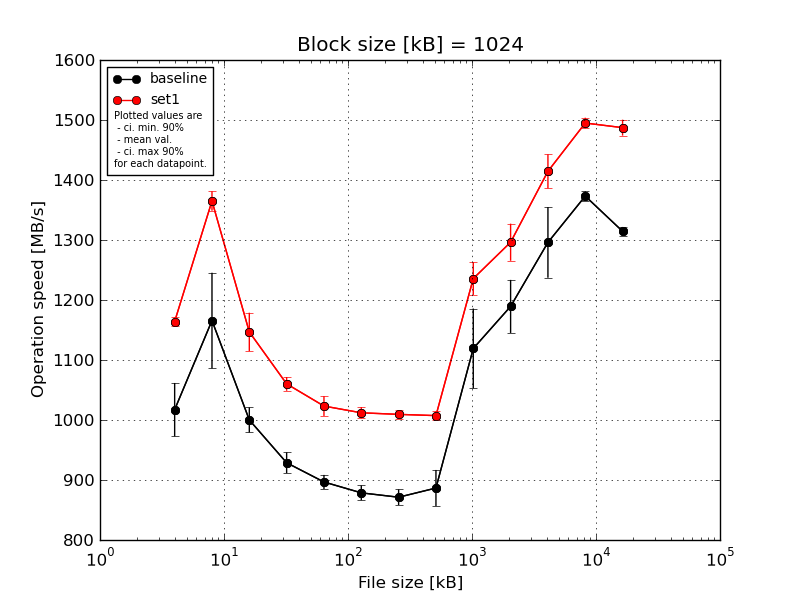
|
Block size [kB] |
File size [kB] |
| 1024 |
2048 |
4096 |
8192 |
16384 |
32768 |
65536 |
131072 |
262144 |
524288 |
1048576 |
2097152 |
4194304 |
| baseline | 1024 | 1060.56 | 1205.64 | 1030.68 | 958.89 | 917.58 | 900.75 | 892.97 | 881.57 | 1038.93 | 1203.81 | 1267.57 | 1369.34 | 1310.84 |
| 1024 | 972.75 | 1067.82 | 977.3 | 929.8 | 897.97 | 871.44 | 868.0 | 941.52 | 1139.02 | 1250.72 | 1270.34 | 1361.12 | 1326.31 |
| 1024 | 1048.36 | 1266.62 | 1005.06 | 923.58 | 888.14 | 868.74 | 875.43 | 866.14 | 1052.13 | 1200.57 | 1392.69 | 1376.24 | 1306.37 |
| 1024 | 960.72 | 1091.02 | 1007.05 | 910.75 | 891.66 | 879.02 | 861.39 | 864.87 | 1185.23 | 1127.07 | 1316.73 | 1383.51 | 1311.74 |
| 1024 | 1043.67 | 1197.55 | 980.39 | 920.59 | 888.1 | 873.01 | 858.69 | 878.93 | 1180.71 | 1164.3 | 1232.6 | 1375.65 | 1317.15 |
| mean val. |
1017.21 |
1165.73 |
1000.1 |
928.72 |
896.69 |
878.59 |
871.3 |
886.61 |
1119.2 |
1189.29 |
1295.99 |
1373.17 |
1314.48 |
| standard dev. |
46.69 |
83.6 |
21.89 |
18.22 |
12.35 |
12.95 |
13.74 |
31.59 |
69.78 |
46.39 |
61.77 |
8.4 |
7.64 |
| ci. min. 90% |
972.7 |
1086.03 |
979.23 |
911.35 |
884.91 |
866.25 |
858.2 |
856.49 |
1052.67 |
1145.07 |
1237.09 |
1365.16 |
1307.2 |
| ci. max 90% |
1061.72 |
1245.43 |
1020.96 |
946.09 |
908.47 |
890.93 |
884.39 |
916.72 |
1185.73 |
1233.52 |
1354.88 |
1381.19 |
1321.77 |
| geom. mean |
1016.34 |
1163.32 |
999.9 |
928.58 |
896.62 |
878.52 |
871.21 |
886.17 |
1117.44 |
1188.57 |
1294.83 |
1373.15 |
1314.47 |
| median |
1043.67 |
1197.55 |
1005.06 |
923.58 |
891.66 |
873.01 |
868.0 |
878.93 |
1139.02 |
1200.57 |
1270.34 |
1375.65 |
1311.74 |
| first quartile |
972.75 |
1091.02 |
980.39 |
920.59 |
888.14 |
871.44 |
861.39 |
866.14 |
1052.13 |
1164.3 |
1267.57 |
1369.34 |
1310.84 |
| third quartile |
1048.36 |
1205.64 |
1007.05 |
929.8 |
897.97 |
879.02 |
875.43 |
881.57 |
1180.71 |
1203.81 |
1316.73 |
1376.24 |
1317.15 |
| minimum |
960.72 |
1067.82 |
977.3 |
910.75 |
888.1 |
868.74 |
858.69 |
864.87 |
1038.93 |
1127.07 |
1232.6 |
1361.12 |
1306.37 |
| maximum |
1060.56 |
1266.62 |
1030.68 |
958.89 |
917.58 |
900.75 |
892.97 |
941.52 |
1185.23 |
1250.72 |
1392.69 |
1383.51 |
1326.31 |
| set1 | 1024 | 1174.94 | 1392.81 | 1181.34 | 1066.95 | 1043.36 | 1013.88 | 1018.66 | 1015.12 | 1214.1 | 1285.78 | 1379.04 | 1499.77 | 1478.31 |
| 1024 | 1158.71 | 1368.05 | 1160.1 | 1056.67 | 1002.44 | 998.69 | 1002.07 | 994.68 | 1197.46 | 1278.67 | 1450.21 | 1485.13 | 1496.51 |
| 1024 | 1156.15 | 1349.56 | 1167.21 | 1076.54 | 1037.81 | 1026.1 | 1015.6 | 1008.77 | 1261.26 | 1334.62 | 1433.51 | 1489.6 | 1493.2 |
| 1024 | 1165.47 | 1359.62 | 1098.65 | 1044.79 | 1021.18 | 1011.48 | 1006.38 | 1007.83 | 1245.88 | 1257.44 | 1419.97 | 1508.64 | 1467.46 |
| 1024 | 1165.47 | 1355.01 | 1126.46 | 1055.97 | 1011.38 | 1009.88 | 1004.2 | 1010.17 | 1259.88 | 1324.91 | 1389.77 | 1491.56 | 1500.74 |
| mean val. |
1164.15 |
1365.01 |
1146.75 |
1060.19 |
1023.23 |
1012.0 |
1009.38 |
1007.32 |
1235.72 |
1296.29 |
1414.5 |
1494.94 |
1487.24 |
| standard dev. |
7.3 |
16.95 |
33.61 |
12.04 |
17.28 |
9.8 |
7.31 |
7.6 |
28.59 |
32.47 |
29.73 |
9.32 |
13.92 |
| ci. min. 90% |
1157.18 |
1348.85 |
1114.7 |
1048.7 |
1006.76 |
1002.66 |
1002.41 |
1000.07 |
1208.45 |
1265.32 |
1386.16 |
1486.06 |
1473.98 |
| ci. max 90% |
1171.11 |
1381.17 |
1178.8 |
1071.67 |
1039.71 |
1021.35 |
1016.36 |
1014.56 |
1262.98 |
1327.25 |
1442.84 |
1503.82 |
1500.51 |
| geom. mean |
1164.13 |
1364.93 |
1146.35 |
1060.13 |
1023.12 |
1011.97 |
1009.36 |
1007.29 |
1235.45 |
1295.96 |
1414.25 |
1494.92 |
1487.19 |
| median |
1165.47 |
1359.62 |
1160.1 |
1056.67 |
1021.18 |
1011.48 |
1006.38 |
1008.77 |
1245.88 |
1285.78 |
1419.97 |
1491.56 |
1493.2 |
| first quartile |
1158.71 |
1355.01 |
1126.46 |
1055.97 |
1011.38 |
1009.88 |
1004.2 |
1007.83 |
1214.1 |
1278.67 |
1389.77 |
1489.6 |
1478.31 |
| third quartile |
1165.47 |
1368.05 |
1167.21 |
1066.95 |
1037.81 |
1013.88 |
1015.6 |
1010.17 |
1259.88 |
1324.91 |
1433.51 |
1499.77 |
1496.51 |
| minimum |
1156.15 |
1349.56 |
1098.65 |
1044.79 |
1002.44 |
998.69 |
1002.07 |
994.68 |
1197.46 |
1257.44 |
1379.04 |
1485.13 |
1467.46 |
| maximum |
1174.94 |
1392.81 |
1181.34 |
1076.54 |
1043.36 |
1026.1 |
1018.66 |
1015.12 |
1261.26 |
1334.62 |
1450.21 |
1508.64 |
1500.74 |
| baseline set1 difference |
14.45 % |
17.09 % |
14.66 % |
14.16 % |
14.11 % |
15.18 % |
15.85 % |
13.61 % |
10.41 % |
9.0 % |
9.14 % |
8.87 % |
13.14 % |
| ttest p-value |
0.0001 |
0.0008 |
0.0 |
0.0 |
0.0 |
0.0 |
0.0 |
0.0 |
0.0086 |
0.0029 |
0.0048 |
0.0 |
0.0 |
| ttest equality |
DIFF |
DIFF |
DIFF |
DIFF |
DIFF |
DIFF |
DIFF |
DIFF |
DIFF |
DIFF |
DIFF |
DIFF |
DIFF |
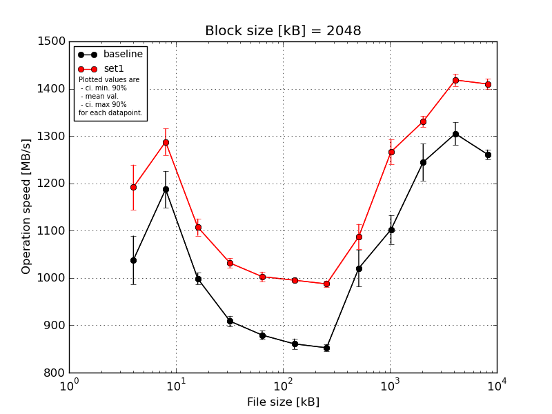
|
Block size [kB] |
File size [kB] |
| 2048 |
4096 |
8192 |
16384 |
32768 |
65536 |
131072 |
262144 |
524288 |
1048576 |
2097152 |
4194304 |
| baseline | 2048 | 1133.17 | 1235.0 | 1015.36 | 926.52 | 894.78 | 879.58 | 865.24 | 1023.57 | 1124.94 | 1252.18 | 1290.78 | 1277.11 |
| 2048 | 1023.52 | 1204.41 | 1001.99 | 905.34 | 880.09 | 853.77 | 855.56 | 988.7 | 1114.87 | 1313.08 | 1334.64 | 1252.33 |
| 2048 | 1017.32 | 1183.43 | 995.27 | 895.36 | 880.52 | 863.5 | 847.16 | 1030.7 | 1130.48 | 1224.08 | 1318.14 | 1254.67 |
| 2048 | 1000.57 | 1123.89 | 1000.26 | 912.87 | 871.58 | 850.07 | 849.18 | 977.99 | 1053.4 | 1213.27 | 1269.39 | 1267.05 |
| 2048 | 1016.21 | 1189.8 | 979.93 | 903.39 | 869.58 | 856.5 | 845.32 | 1081.75 | 1086.61 | 1220.66 | 1311.9 | 1255.25 |
| mean val. |
1038.16 |
1187.31 |
998.56 |
908.7 |
879.31 |
860.68 |
852.49 |
1020.54 |
1102.06 |
1244.65 |
1304.97 |
1261.28 |
| standard dev. |
53.78 |
40.65 |
12.8 |
11.75 |
9.95 |
11.65 |
8.11 |
40.88 |
32.02 |
40.99 |
25.34 |
10.53 |
| ci. min. 90% |
986.88 |
1148.55 |
986.36 |
897.49 |
869.83 |
849.57 |
844.76 |
981.57 |
1071.53 |
1205.57 |
1280.81 |
1251.24 |
| ci. max 90% |
1089.43 |
1226.06 |
1010.76 |
919.9 |
888.79 |
871.79 |
860.22 |
1059.52 |
1132.59 |
1283.74 |
1329.14 |
1271.33 |
| geom. mean |
1037.09 |
1186.74 |
998.5 |
908.64 |
879.27 |
860.62 |
852.46 |
1019.9 |
1101.68 |
1244.12 |
1304.77 |
1261.25 |
| median |
1017.32 |
1189.8 |
1000.26 |
905.34 |
880.09 |
856.5 |
849.18 |
1023.57 |
1114.87 |
1224.08 |
1311.9 |
1255.25 |
| first quartile |
1016.21 |
1183.43 |
995.27 |
903.39 |
871.58 |
853.77 |
847.16 |
988.7 |
1086.61 |
1220.66 |
1290.78 |
1254.67 |
| third quartile |
1023.52 |
1204.41 |
1001.99 |
912.87 |
880.52 |
863.5 |
855.56 |
1030.7 |
1124.94 |
1252.18 |
1318.14 |
1267.05 |
| minimum |
1000.57 |
1123.89 |
979.93 |
895.36 |
869.58 |
850.07 |
845.32 |
977.99 |
1053.4 |
1213.27 |
1269.39 |
1252.33 |
| maximum |
1133.17 |
1235.0 |
1015.36 |
926.52 |
894.78 |
879.58 |
865.24 |
1081.75 |
1130.48 |
1313.08 |
1334.64 |
1277.11 |
| set1 | 2048 | 1184.86 | 1317.53 | 1108.8 | 1035.12 | 1011.03 | 993.19 | 996.9 | 1047.23 | 1268.99 | 1346.09 | 1403.84 | 1430.35 |
| 2048 | 1169.5 | 1238.37 | 1075.85 | 1012.34 | 989.36 | 995.89 | 982.83 | 1092.2 | 1285.57 | 1340.68 | 1410.67 | 1400.97 |
| 2048 | 1158.68 | 1293.26 | 1125.5 | 1039.64 | 1015.46 | 1001.41 | 991.57 | 1079.94 | 1243.95 | 1325.09 | 1436.5 | 1403.26 |
| 2048 | 1279.57 | 1296.16 | 1116.66 | 1036.8 | 995.58 | 991.91 | 987.96 | 1125.18 | 1233.48 | 1317.66 | 1413.7 | 1406.74 |
| 2048 | 1165.6 | 1293.26 | 1110.2 | 1034.53 | 1002.7 | 993.99 | 978.15 | 1092.3 | 1300.17 | 1324.69 | 1427.46 | 1408.57 |
| mean val. |
1191.64 |
1287.72 |
1107.4 |
1031.69 |
1002.83 |
995.28 |
987.48 |
1087.37 |
1266.43 |
1330.84 |
1418.44 |
1409.98 |
| standard dev. |
50.08 |
29.4 |
18.83 |
11.0 |
10.73 |
3.72 |
7.32 |
28.03 |
27.85 |
11.98 |
13.26 |
11.77 |
| ci. min. 90% |
1143.9 |
1259.69 |
1089.45 |
1021.2 |
992.6 |
991.73 |
980.5 |
1060.64 |
1239.88 |
1319.42 |
1405.79 |
1398.76 |
| ci. max 90% |
1239.39 |
1315.74 |
1125.36 |
1042.17 |
1013.05 |
998.82 |
994.46 |
1114.1 |
1292.98 |
1342.26 |
1431.08 |
1421.2 |
| geom. mean |
1190.83 |
1287.44 |
1107.27 |
1031.64 |
1002.78 |
995.27 |
987.46 |
1087.08 |
1266.19 |
1330.8 |
1418.39 |
1409.94 |
| median |
1169.5 |
1293.26 |
1110.2 |
1035.12 |
1002.7 |
993.99 |
987.96 |
1092.2 |
1268.99 |
1325.09 |
1413.7 |
1406.74 |
| first quartile |
1165.6 |
1293.26 |
1108.8 |
1034.53 |
995.58 |
993.19 |
982.83 |
1079.94 |
1243.95 |
1324.69 |
1410.67 |
1403.26 |
| third quartile |
1184.86 |
1296.16 |
1116.66 |
1036.8 |
1011.03 |
995.89 |
991.57 |
1092.3 |
1285.57 |
1340.68 |
1427.46 |
1408.57 |
| minimum |
1158.68 |
1238.37 |
1075.85 |
1012.34 |
989.36 |
991.91 |
978.15 |
1047.23 |
1233.48 |
1317.66 |
1403.84 |
1400.97 |
| maximum |
1279.57 |
1317.53 |
1125.5 |
1039.64 |
1015.46 |
1001.41 |
996.9 |
1125.18 |
1300.17 |
1346.09 |
1436.5 |
1430.35 |
| baseline set1 difference |
14.78 % |
8.46 % |
10.9 % |
13.53 % |
14.05 % |
15.64 % |
15.83 % |
6.55 % |
14.91 % |
6.92 % |
8.69 % |
11.79 % |
| ttest p-value |
0.0016 |
0.0021 |
0.0 |
0.0 |
0.0 |
0.0 |
0.0 |
0.0167 |
0.0 |
0.002 |
0.0 |
0.0 |
| ttest equality |
DIFF |
DIFF |
DIFF |
DIFF |
DIFF |
DIFF |
DIFF |
DIFF |
DIFF |
DIFF |
DIFF |
DIFF |
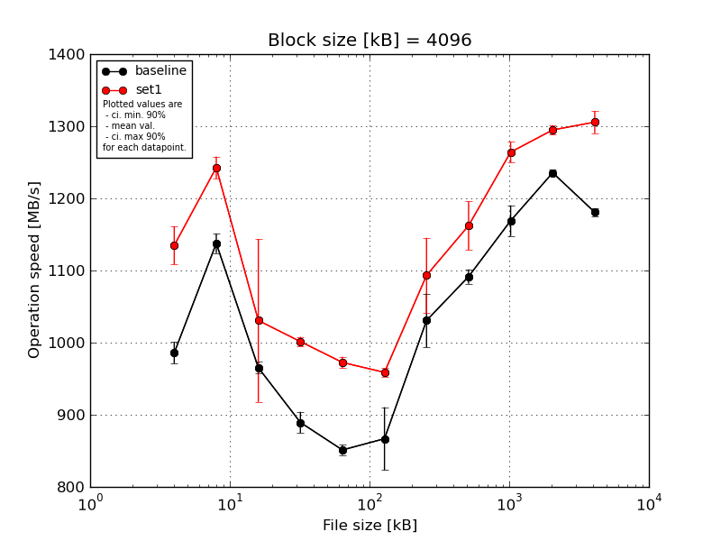
|
Block size [kB] |
File size [kB] |
| 4096 |
8192 |
16384 |
32768 |
65536 |
131072 |
262144 |
524288 |
1048576 |
2097152 |
4194304 |
| baseline | 4096 | 1011.11 | 1159.42 | 972.76 | 915.18 | 862.24 | 899.5 | 1063.63 | 1082.17 | 1182.56 | 1237.77 | 1172.84 |
| 4096 | 990.34 | 1128.19 | 969.52 | 888.47 | 853.49 | 931.38 | 1039.32 | 1097.01 | 1146.05 | 1229.27 | 1187.46 |
| 4096 | 975.83 | 1140.73 | 950.96 | 885.39 | 848.28 | 837.33 | 1065.59 | 1092.64 | 1143.63 | 1241.5 | 1179.38 |
| 4096 | 978.96 | 1122.34 | 965.31 | 874.34 | 842.24 | 834.1 | 971.88 | 1080.36 | 1183.04 | 1233.07 | 1179.57 |
| 4096 | 972.77 | 1137.64 | 968.16 | 883.41 | 849.79 | 831.85 | 1013.22 | 1105.63 | 1189.88 | 1235.99 | 1184.48 |
| mean val. |
985.8 |
1137.66 |
965.34 |
889.36 |
851.21 |
866.83 |
1030.73 |
1091.56 |
1169.03 |
1235.52 |
1180.75 |
| standard dev. |
15.63 |
14.2 |
8.48 |
15.36 |
7.38 |
45.82 |
39.18 |
10.52 |
22.29 |
4.64 |
5.59 |
| ci. min. 90% |
970.9 |
1124.12 |
957.26 |
874.71 |
844.17 |
823.15 |
993.37 |
1081.54 |
1147.78 |
1231.1 |
1175.42 |
| ci. max 90% |
1000.71 |
1151.21 |
973.42 |
904.0 |
858.25 |
910.52 |
1068.08 |
1101.59 |
1190.28 |
1239.94 |
1186.07 |
| geom. mean |
985.7 |
1137.59 |
965.31 |
889.25 |
851.18 |
865.88 |
1030.12 |
1091.52 |
1168.86 |
1235.51 |
1180.74 |
| median |
978.96 |
1137.64 |
968.16 |
885.39 |
849.79 |
837.33 |
1039.32 |
1092.64 |
1182.56 |
1235.99 |
1179.57 |
| first quartile |
975.83 |
1128.19 |
965.31 |
883.41 |
848.28 |
834.1 |
1013.22 |
1082.17 |
1146.05 |
1233.07 |
1179.38 |
| third quartile |
990.34 |
1140.73 |
969.52 |
888.47 |
853.49 |
899.5 |
1063.63 |
1097.01 |
1183.04 |
1237.77 |
1184.48 |
| minimum |
972.77 |
1122.34 |
950.96 |
874.34 |
842.24 |
831.85 |
971.88 |
1080.36 |
1143.63 |
1229.27 |
1172.84 |
| maximum |
1011.11 |
1159.42 |
972.76 |
915.18 |
862.24 |
931.38 |
1065.59 |
1105.63 |
1189.88 |
1241.5 |
1187.46 |
| set1 | 4096 | 1116.34 | 1237.63 | 1091.7 | 1002.41 | 982.2 | 960.85 | 1106.17 | 1147.68 | 1246.29 | 1284.8 | 1296.62 |
| 4096 | 1177.86 | 1265.02 | 1081.31 | 997.57 | 965.53 | 948.4 | 1056.01 | 1224.8 | 1258.58 | 1299.86 | 1302.37 |
| 4096 | 1148.75 | 1243.41 | 819.0 | 1012.28 | 979.51 | 964.45 | 1134.72 | 1152.03 | 1278.52 | 1290.85 | 1298.62 |
| 4096 | 1114.78 | 1220.83 | 1072.96 | 993.88 | 963.14 | 959.24 | 1149.85 | 1141.71 | 1281.83 | 1301.68 | 1334.5 |
| 4096 | 1116.34 | 1246.88 | 1088.58 | 1001.22 | 972.33 | 960.84 | 1019.75 | 1144.98 | 1255.36 | 1297.05 | 1296.52 |
| mean val. |
1134.81 |
1242.75 |
1030.71 |
1001.47 |
972.54 |
958.75 |
1093.3 |
1162.24 |
1264.11 |
1294.85 |
1305.73 |
| standard dev. |
27.98 |
15.97 |
118.57 |
6.9 |
8.36 |
6.09 |
54.5 |
35.18 |
15.38 |
6.96 |
16.26 |
| ci. min. 90% |
1108.14 |
1227.53 |
917.67 |
994.89 |
964.57 |
952.94 |
1041.34 |
1128.71 |
1249.45 |
1288.21 |
1290.23 |
| ci. max 90% |
1161.49 |
1257.98 |
1143.75 |
1008.05 |
980.51 |
964.57 |
1145.26 |
1195.78 |
1278.78 |
1301.48 |
1321.23 |
| geom. mean |
1134.54 |
1242.67 |
1024.6 |
1001.45 |
972.51 |
958.74 |
1092.2 |
1161.83 |
1264.04 |
1294.83 |
1305.65 |
| median |
1116.34 |
1243.41 |
1081.31 |
1001.22 |
972.33 |
960.84 |
1106.17 |
1147.68 |
1258.58 |
1297.05 |
1298.62 |
| first quartile |
1116.34 |
1237.63 |
1072.96 |
997.57 |
965.53 |
959.24 |
1056.01 |
1144.98 |
1255.36 |
1290.85 |
1296.62 |
| third quartile |
1148.75 |
1246.88 |
1088.58 |
1002.41 |
979.51 |
960.85 |
1134.72 |
1152.03 |
1278.52 |
1299.86 |
1302.37 |
| minimum |
1114.78 |
1220.83 |
819.0 |
993.88 |
963.14 |
948.4 |
1019.75 |
1141.71 |
1246.29 |
1284.8 |
1296.52 |
| maximum |
1177.86 |
1265.02 |
1091.7 |
1012.28 |
982.2 |
964.45 |
1149.85 |
1224.8 |
1281.83 |
1301.68 |
1334.5 |
| baseline set1 difference |
15.12 % |
9.24 % |
6.77 % |
12.61 % |
14.25 % |
10.6 % |
6.07 % |
6.48 % |
8.13 % |
4.8 % |
10.58 % |
| ttest p-value |
0.0 |
0.0 |
0.2538 |
0.0 |
0.0 |
0.0021 |
0.0706 |
0.0026 |
0.0 |
0.0 |
0.0 |
| ttest equality |
DIFF |
DIFF |
SAME |
DIFF |
DIFF |
DIFF |
DIFF |
DIFF |
DIFF |
DIFF |
DIFF |
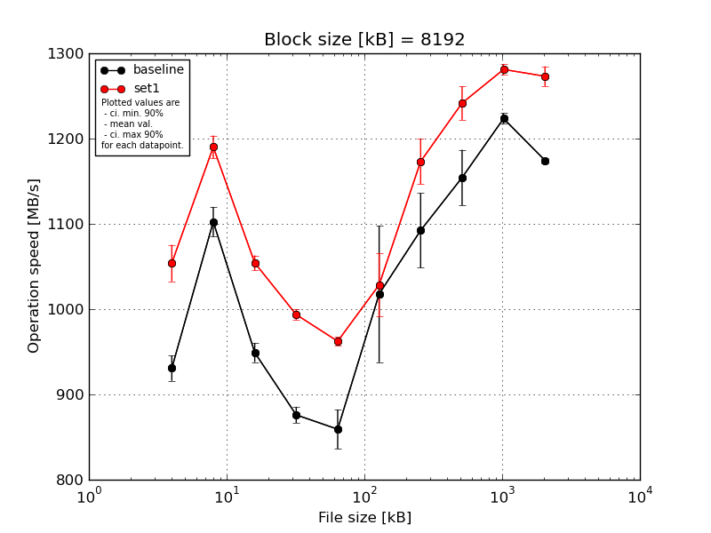
|
Block size [kB] |
File size [kB] |
| 8192 |
16384 |
32768 |
65536 |
131072 |
262144 |
524288 |
1048576 |
2097152 |
4194304 |
| baseline | 8192 | 946.96 | 1127.71 | 961.36 | 889.98 | 861.3 | 1108.51 | 1089.71 | 1125.93 | 1233.91 | 1173.62 |
| 8192 | 948.0 | 1094.62 | 944.93 | 875.44 | 845.89 | 954.8 | 1113.03 | 1181.88 | 1221.14 | 1169.57 |
| 8192 | 916.82 | 1105.44 | 949.61 | 862.47 | 848.15 | 1109.47 | 1021.99 | 1196.77 | 1220.19 | 1176.68 |
| 8192 | 917.32 | 1106.66 | 931.58 | 874.98 | 900.25 | 973.66 | 1147.3 | 1148.17 | 1216.91 | 1178.23 |
| 8192 | 924.65 | 1078.09 | 957.8 | 877.18 | 840.52 | 942.31 | 1089.4 | 1118.86 | 1225.21 | 1173.92 |
| mean val. |
930.75 |
1102.51 |
949.06 |
876.01 |
859.22 |
1017.75 |
1092.29 |
1154.32 |
1223.47 |
1174.41 |
| standard dev. |
15.59 |
18.16 |
11.73 |
9.76 |
24.17 |
84.04 |
45.86 |
34.14 |
6.55 |
3.32 |
| ci. min. 90% |
915.89 |
1085.19 |
937.87 |
866.7 |
836.18 |
937.63 |
1048.56 |
1121.77 |
1217.23 |
1171.24 |
| ci. max 90% |
945.61 |
1119.82 |
960.24 |
885.32 |
882.27 |
1097.87 |
1136.01 |
1186.87 |
1229.71 |
1177.57 |
| geom. mean |
930.65 |
1102.39 |
949.0 |
875.97 |
858.96 |
1015.02 |
1091.51 |
1153.92 |
1223.46 |
1174.4 |
| median |
924.65 |
1105.44 |
949.61 |
875.44 |
848.15 |
973.66 |
1089.71 |
1148.17 |
1221.14 |
1173.92 |
| first quartile |
917.32 |
1094.62 |
944.93 |
874.98 |
845.89 |
954.8 |
1089.4 |
1125.93 |
1220.19 |
1173.62 |
| third quartile |
946.96 |
1106.66 |
957.8 |
877.18 |
861.3 |
1108.51 |
1113.03 |
1181.88 |
1225.21 |
1176.68 |
| minimum |
916.82 |
1078.09 |
931.58 |
862.47 |
840.52 |
942.31 |
1021.99 |
1118.86 |
1216.91 |
1169.57 |
| maximum |
948.0 |
1127.71 |
961.36 |
889.98 |
900.25 |
1109.47 |
1147.3 |
1196.77 |
1233.91 |
1178.23 |
| set1 | 8192 | 1033.72 | 1198.14 | 1045.13 | 998.3 | 960.12 | 994.97 | 1125.95 | 1224.0 | 1284.47 | 1261.94 |
| 8192 | 1074.26 | 1194.75 | 1043.64 | 989.83 | 960.6 | 996.36 | 1188.47 | 1235.76 | 1289.42 | 1285.29 |
| 8192 | 1082.37 | 1195.2 | 1058.69 | 1001.94 | 971.79 | 1010.55 | 1185.63 | 1276.4 | 1282.11 | 1285.37 |
| 8192 | 1041.23 | 1165.07 | 1060.52 | 985.16 | 960.16 | 1066.24 | 1195.41 | 1242.79 | 1272.06 | 1260.42 |
| 8192 | 1038.55 | 1197.52 | 1063.26 | 992.71 | 959.27 | 1074.39 | 1170.34 | 1229.4 | 1277.36 | 1272.45 |
| mean val. |
1054.03 |
1190.13 |
1054.25 |
993.59 |
962.39 |
1028.5 |
1173.16 |
1241.67 |
1281.08 |
1273.09 |
| standard dev. |
22.52 |
14.09 |
9.17 |
6.67 |
5.28 |
38.76 |
27.94 |
20.65 |
6.66 |
12.09 |
| ci. min. 90% |
1032.56 |
1176.7 |
1045.51 |
987.23 |
957.36 |
991.55 |
1146.52 |
1221.98 |
1274.74 |
1261.56 |
| ci. max 90% |
1075.5 |
1203.57 |
1062.99 |
999.94 |
967.42 |
1065.46 |
1199.79 |
1261.36 |
1287.43 |
1284.62 |
| geom. mean |
1053.84 |
1190.07 |
1054.22 |
993.57 |
962.38 |
1027.92 |
1172.89 |
1241.53 |
1281.07 |
1273.05 |
| median |
1041.23 |
1195.2 |
1058.69 |
992.71 |
960.16 |
1010.55 |
1185.63 |
1235.76 |
1282.11 |
1272.45 |
| first quartile |
1038.55 |
1194.75 |
1045.13 |
989.83 |
960.12 |
996.36 |
1170.34 |
1229.4 |
1277.36 |
1261.94 |
| third quartile |
1074.26 |
1197.52 |
1060.52 |
998.3 |
960.6 |
1066.24 |
1188.47 |
1242.79 |
1284.47 |
1285.29 |
| minimum |
1033.72 |
1165.07 |
1043.64 |
985.16 |
959.27 |
994.97 |
1125.95 |
1224.0 |
1272.06 |
1260.42 |
| maximum |
1082.37 |
1198.14 |
1063.26 |
1001.94 |
971.79 |
1074.39 |
1195.41 |
1276.4 |
1289.42 |
1285.37 |
| baseline set1 difference |
13.25 % |
7.95 % |
11.08 % |
13.42 % |
12.01 % |
1.06 % |
7.4 % |
7.57 % |
4.71 % |
8.4 % |
| ttest p-value |
0.0 |
0.0 |
0.0 |
0.0 |
0.0 |
0.8016 |
0.0098 |
0.0012 |
0.0 |
0.0 |
| ttest equality |
DIFF |
DIFF |
DIFF |
DIFF |
DIFF |
SAME |
DIFF |
DIFF |
DIFF |
DIFF |
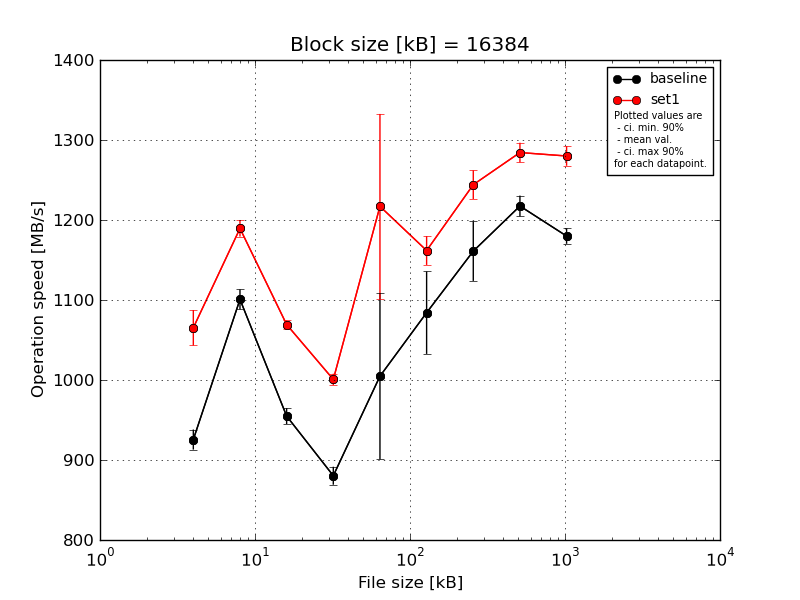
|
Block size [kB] |
File size [kB] |
| 16384 |
32768 |
65536 |
131072 |
262144 |
524288 |
1048576 |
2097152 |
4194304 |
| baseline | 16384 | 947.09 | 1105.97 | 971.96 | 898.22 | 928.05 | 1166.09 | 1214.04 | 1209.71 | 1194.21 |
| 16384 | 919.48 | 1117.59 | 955.98 | 883.18 | 921.63 | 1083.73 | 1171.65 | 1230.03 | 1183.64 |
| 16384 | 928.93 | 1081.33 | 944.26 | 866.04 | 1041.38 | 1099.48 | 1174.87 | 1211.93 | 1178.8 |
| 16384 | 917.74 | 1099.02 | 951.41 | 876.17 | 1180.16 | 1038.83 | 1123.82 | 1233.62 | 1176.55 |
| 16384 | 914.65 | 1099.8 | 950.81 | 878.05 | 952.65 | 1032.45 | 1121.01 | 1201.98 | 1166.4 |
| mean val. |
925.58 |
1100.74 |
954.88 |
880.33 |
1004.78 |
1084.12 |
1161.08 |
1217.45 |
1179.92 |
| standard dev. |
13.15 |
13.15 |
10.42 |
11.78 |
109.11 |
54.03 |
39.05 |
13.68 |
10.17 |
| ci. min. 90% |
913.04 |
1088.2 |
944.95 |
869.1 |
900.76 |
1032.61 |
1123.84 |
1204.41 |
1170.23 |
| ci. max 90% |
938.12 |
1113.28 |
964.82 |
891.56 |
1108.8 |
1135.63 |
1198.31 |
1230.5 |
1189.62 |
| geom. mean |
925.51 |
1100.68 |
954.84 |
880.27 |
1000.28 |
1083.06 |
1160.55 |
1217.39 |
1179.89 |
| median |
919.48 |
1099.8 |
951.41 |
878.05 |
952.65 |
1083.73 |
1171.65 |
1211.93 |
1178.8 |
| first quartile |
917.74 |
1099.02 |
950.81 |
876.17 |
928.05 |
1038.83 |
1123.82 |
1209.71 |
1176.55 |
| third quartile |
928.93 |
1105.97 |
955.98 |
883.18 |
1041.38 |
1099.48 |
1174.87 |
1230.03 |
1183.64 |
| minimum |
914.65 |
1081.33 |
944.26 |
866.04 |
921.63 |
1032.45 |
1121.01 |
1201.98 |
1166.4 |
| maximum |
947.09 |
1117.59 |
971.96 |
898.22 |
1180.16 |
1166.09 |
1214.04 |
1233.62 |
1194.21 |
| set1 | 16384 | 1029.86 | 1185.71 | 1066.79 | 1009.73 | 1265.36 | 1144.35 | 1266.7 | 1277.81 | 1261.57 |
| 16384 | 1070.75 | 1179.51 | 1067.2 | 992.55 | 1272.24 | 1185.35 | 1251.13 | 1304.94 | 1284.93 |
| 16384 | 1094.46 | 1207.64 | 1078.71 | 1007.41 | 1283.17 | 1150.6 | 1250.5 | 1288.92 | 1293.09 |
| 16384 | 1069.09 | 1186.37 | 1068.25 | 995.94 | 1000.75 | 1179.03 | 1216.96 | 1275.04 | 1288.05 |
| 16384 | 1062.36 | 1188.14 | 1065.58 | 997.93 | 1263.75 | 1149.77 | 1235.41 | 1274.88 | 1272.35 |
| mean val. |
1065.3 |
1189.47 |
1069.31 |
1000.71 |
1217.05 |
1161.82 |
1244.14 |
1284.32 |
1280.0 |
| standard dev. |
23.23 |
10.66 |
5.34 |
7.47 |
121.16 |
18.88 |
18.8 |
12.88 |
12.83 |
| ci. min. 90% |
1043.16 |
1179.31 |
1064.21 |
993.59 |
1101.54 |
1143.82 |
1226.22 |
1272.03 |
1267.76 |
| ci. max 90% |
1087.45 |
1199.64 |
1074.4 |
1007.83 |
1332.57 |
1179.82 |
1262.06 |
1296.6 |
1292.23 |
| geom. mean |
1065.1 |
1189.44 |
1069.3 |
1000.69 |
1211.74 |
1161.7 |
1244.03 |
1284.26 |
1279.95 |
| median |
1069.09 |
1186.37 |
1067.2 |
997.93 |
1265.36 |
1150.6 |
1250.5 |
1277.81 |
1284.93 |
| first quartile |
1062.36 |
1185.71 |
1066.79 |
995.94 |
1263.75 |
1149.77 |
1235.41 |
1275.04 |
1272.35 |
| third quartile |
1070.75 |
1188.14 |
1068.25 |
1007.41 |
1272.24 |
1179.03 |
1251.13 |
1288.92 |
1288.05 |
| minimum |
1029.86 |
1179.51 |
1065.58 |
992.55 |
1000.75 |
1144.35 |
1216.96 |
1274.88 |
1261.57 |
| maximum |
1094.46 |
1207.64 |
1078.71 |
1009.73 |
1283.17 |
1185.35 |
1266.7 |
1304.94 |
1293.09 |
| baseline set1 difference |
15.1 % |
8.06 % |
11.98 % |
13.67 % |
21.13 % |
7.17 % |
7.15 % |
5.49 % |
8.48 % |
| ttest p-value |
0.0 |
0.0 |
0.0 |
0.0 |
0.0196 |
0.0162 |
0.0027 |
0.0 |
0.0 |
| ttest equality |
DIFF |
DIFF |
DIFF |
DIFF |
DIFF |
DIFF |
DIFF |
DIFF |
DIFF |